AWS Lambda Durable Functions: an orchestrator across LLM calls
Step-by-step presentation guide. Every request, response, ID and screenshot comes from a real run in stack dfdemo, region eu-central-1.
Source: src/steps/NN-*/artifacts/, screenshots in report/img/. Each step ends with a prompt that reproduces its code.
What are durable functions?
The first durable function: retry, checkpoint, replay
Outline bullet
Show simple code handler. Two steps: the second fails, gets retried, and succeeds. Explain checkpointing and replay.
Goal
Show that a normal Lambda handler wrapped in withDurableExecution survives a failing step. Step "prepare" is checkpointed; step "flaky" fails on attempt 1, is retried after a delay, and succeeds on attempt 2 without re-running "prepare".
What to say
- This is a plain Lambda handler. The only change is the withDurableExecution wrapper and context.step around the work.
- Each step is checkpointed when it succeeds. Step "prepare" runs once; its result is stored.
- Step "flaky" throws on attempt 1. The SDK records StepFailed, ends the invocation and starts a new one after the retry delay (1 s here).
- The new invocation replays the handler from the top. "prepare" returns its stored result without running its body; only "flaky" runs again, now with attempt 2.
- Look at the logs: prepare_body_executed appears once, flaky_body_executed twice, handler_invoked twice.
Code excerpt (final code)
export const handler = withDurableExecution(async (
event: RetryEvent,
context: DurableContext
): Promise<Record<string, unknown>> => {
console.log(JSON.stringify({ event: 'handler_invoked', requestId: context.lambdaContext.awsRequestId }))
const greeting = await context.step('prepare', async () => {
console.log(JSON.stringify({ event: 'prepare_body_executed' }))
return `Hello, ${event.name ?? 'durable world'}`
})
const result = await context.step('flaky', async (stepCtx) => {
console.log(JSON.stringify({ event: 'flaky_body_executed', attempt: stepCtx.attempt }))
if (stepCtx.attempt < 2) {
throw new Error('Simulated transient failure on attempt 1')
}
return { greeting, succeededOnAttempt: stepCtx.attempt }
}, {
retryStrategy: createRetryStrategy({
maxAttempts: 3,
initialDelay: { seconds: 1 },
maxDelay: { seconds: 5 },
backoffRate: 2.0,
}),
})
return { status: 'completed', ...result }Invocation
| Function | dfdemo-01-retry:2 |
|---|---|
| Request ID (x-amzn-RequestId) | 6f068699-2485-4c43-89b2-5abc52d7fcc0 |
| Durable execution ID | 433ebc7b-64ce-3bde-99b5-30221d8270ee |
| Durable execution ARN | arn:aws:lambda:eu-central-1:913524906826:function:dfdemo-01-retry:2/durable-execution/14b62773-262a-4419-b8fc-3e2952252c5c/433ebc7b-64ce-3bde-99b5-30221d8270ee |
| Status | SUCCEEDED |
| Started / ended | 2026-10-31T11:51:32.078000+01:00 / 2026-10-31T11:51:35.307000+01:00 (3.2 s wall clock) |
{
"name": "durable world"
}{
"StatusCode": 202,
"ExecutedVersion": null,
"DurableExecutionArn": "arn:aws:lambda:eu-central-1:913524906826:function:dfdemo-01-retry:2/durable-execution/14b62773-262a-4419-b8fc-3e2952252c5c/433ebc7b-64ce-3bde-99b5-30221d8270ee",
"Headers": {
"x-amzn-RequestId": "6f068699-2485-4c43-89b2-5abc52d7fcc0"
},
"Body": ""
}{
"status": "completed",
"greeting": "Hello, durable world",
"succeededOnAttempt": 2
}History event sequence (history.json): ExecutionStarted → StepStarted(prepare) → StepSucceeded(prepare) → StepStarted(flaky) → StepFailed(flaky) → InvocationCompleted → StepStarted(flaky) → StepSucceeded(flaky) → InvocationCompleted → ExecutionSucceeded. StepFailed(flaky) then a second StepStarted(flaky), but no second StepStarted(prepare).
{"timestamp":"2026-10-31T10:51:32.556Z","level":"INFO","requestId":"994d90ac-b2fe-4425-81fc-7588e9aaaa45","message":"{\"event\":\"handler_invoked\",\"requestId\":\"994d90ac-b2fe-4425-81fc-7588e9aaaa45\"}"}
{"timestamp":"2026-10-31T10:51:32.590Z","level":"INFO","requestId":"994d90ac-b2fe-4425-81fc-7588e9aaaa45","message":"{\"event\":\"prepare_body_executed\"}"}
{"timestamp":"2026-10-31T10:51:34.177Z","level":"INFO","requestId":"994d90ac-b2fe-4425-81fc-7588e9aaaa45","message":"{\"event\":\"flaky_body_executed\",\"attempt\":1}"}
{"timestamp":"2026-10-31T10:51:35.254Z","level":"INFO","requestId":"f06fe744-b33f-4702-97eb-53a67eb0e579","message":"{\"event\":\"handler_invoked\",\"requestId\":\"f06fe744-b33f-4702-97eb-53a67eb0e579\"}"}
{"timestamp":"2026-10-31T10:51:35.255Z","level":"INFO","requestId":"f06fe744-b33f-4702-97eb-53a67eb0e579","message":"{\"event\":\"flaky_body_executed\",\"attempt\":2}"}Screenshots

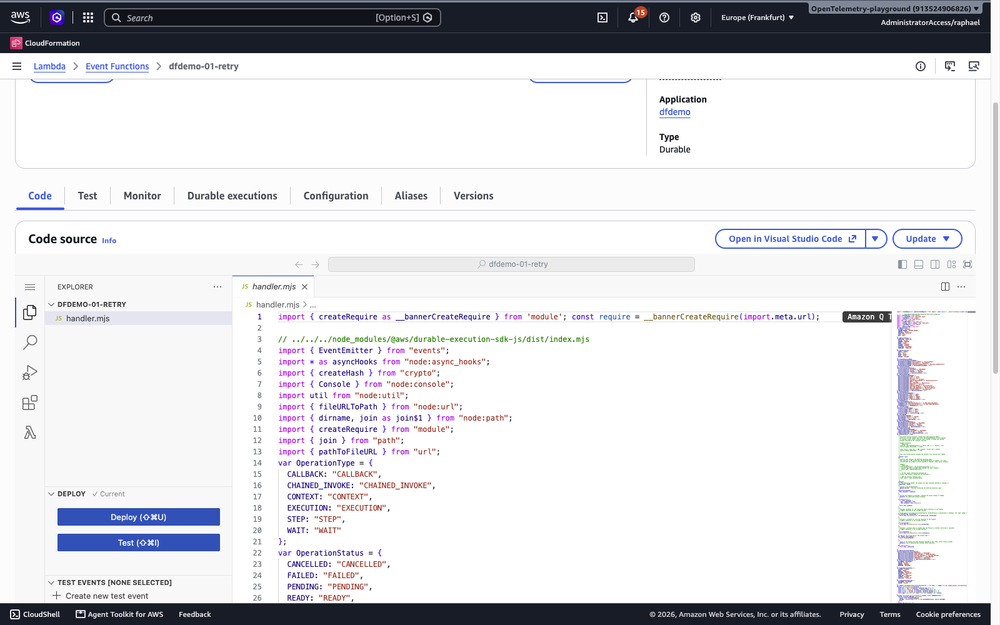

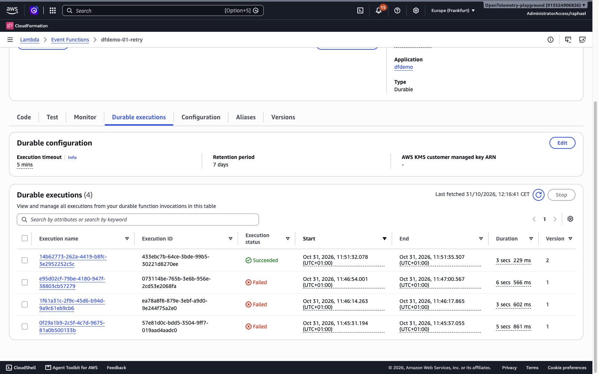

Durable execution drill-down (console)

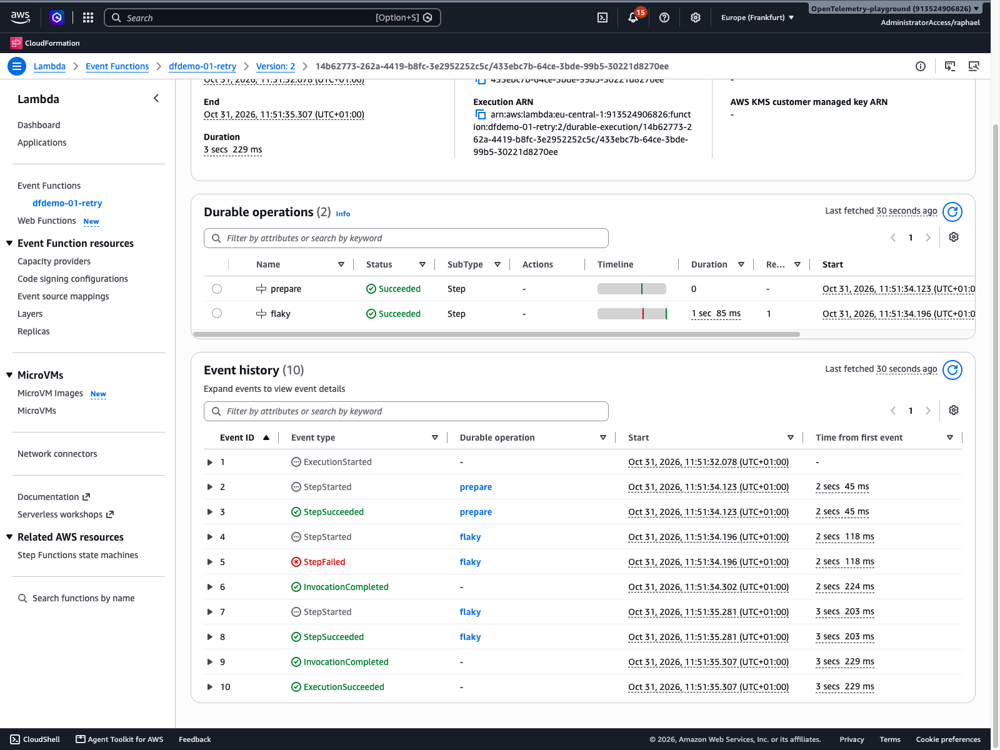

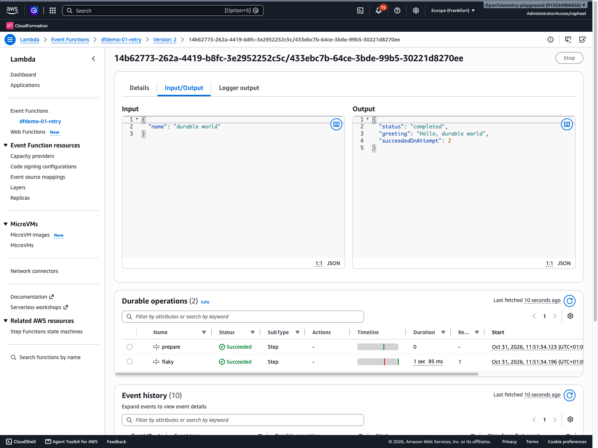

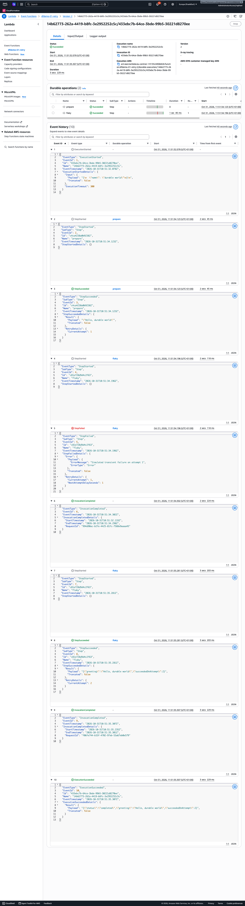
Prompt that would generate this
Write an AWS Lambda durable function in TypeScript (ESM) using @aws/durable-execution-sdk-js v3: `withDurableExecution(async (event, context) => ...)`.
Event: { name?: string }.
1. Log JSON { event: "handler_invoked", requestId: context.lambdaContext.awsRequestId } with plain console.log (not context.logger) so every execution is visible in CloudWatch.
2. context.step("prepare") logs { event: "prepare_body_executed" } and returns `Hello, ${event.name ?? "durable world"}`.
3. context.step("flaky", async (stepCtx) => ...) logs { event: "flaky_body_executed", attempt: stepCtx.attempt }, throws Error("Simulated transient failure on attempt 1") while stepCtx.attempt < 2, otherwise returns { greeting, succeededOnAttempt: stepCtx.attempt }. Give it retryStrategy: createRetryStrategy({ maxAttempts: 3, initialDelay: { seconds: 1 }, maxDelay: { seconds: 5 }, backoffRate: 2.0 }).
4. Return { status: "completed", ...result }.
Add a header comment that explains checkpoint and replay. Also add it as a SAM function dfdemo-01-retry (256 MB, 30 s timeout, DurableConfig ExecutionTimeout 300, AutoPublishAlias live) and a request.json { "name": "durable world" }.Add a wait operation: you do not pay for waiting
Outline bullet
Extend the Lambda with a wait operation. Execute it and look at the billed duration. Takeaway: you don't pay for wait time.
Goal
Extend step 01 with context.wait("cooldown", 60 s). Compare the wall-clock duration of the execution (about 61 s) with the sum of billed durations of the handler invocations (179 ms).
What to say
- Same handler as before, plus one line: context.wait with 60 seconds.
- When the wait starts, the invocation ends. Nothing runs and nothing is billed until the timer fires and a new invocation replays the handler.
- Wall clock for the execution: 61.357 s. Billed: three invocations, 71 + 67 + 41 = 179 ms.
- Takeaway: you do not pay for the wait time. This is why durable functions suit waits of minutes, hours or days.
Code excerpt (final code)
// The function is not running while it waits.
await context.wait('cooldown', { seconds: waitSeconds })
const finished = await context.step('finish', async () => {
console.log(JSON.stringify({ event: 'finish_body_executed' }))
return 'done'
})
return { status: 'completed', greeting, flaky, waitSeconds, finished }Invocation
| Function | dfdemo-02-wait:2 |
|---|---|
| Request ID (x-amzn-RequestId) | 71c4aa01-3686-48cf-b0a6-7015cf187bb8 |
| Durable execution ID | 8ee1eb82-7baf-371e-8fcb-6519ae5fc9ef |
| Durable execution ARN | arn:aws:lambda:eu-central-1:913524906826:function:dfdemo-02-wait:2/durable-execution/cebba598-2afa-4225-804a-ed24d64c411e/8ee1eb82-7baf-371e-8fcb-6519ae5fc9ef |
| Status | SUCCEEDED |
| Started / ended | 2026-10-31T11:58:44.934000+01:00 / 2026-10-31T11:59:46.291000+01:00 (61.4 s wall clock) |
{
"name": "durable world",
"waitSeconds": 60
}{
"StatusCode": 202,
"ExecutedVersion": null,
"DurableExecutionArn": "arn:aws:lambda:eu-central-1:913524906826:function:dfdemo-02-wait:2/durable-execution/cebba598-2afa-4225-804a-ed24d64c411e/8ee1eb82-7baf-371e-8fcb-6519ae5fc9ef",
"Headers": {
"x-amzn-RequestId": "71c4aa01-3686-48cf-b0a6-7015cf187bb8"
},
"Body": ""
}{
"status": "completed",
"greeting": "Hello, durable world",
"flaky": {
"succeededOnAttempt": 2
},
"waitSeconds": 60,
"finished": "done"
}REPORT lines (billed duration) versus wall clock
REPORT RequestId: af35107c-e7bf-4dc9-8b8d-c00204868179 Duration: 70.412 ms Billed Duration: 71 ms Memory Size: 256 MB Max Memory Used: 107 MB Status: success
REPORT RequestId: 9bb40dcf-a2e4-4f12-a69e-d38139b170a6 Duration: 66.03 ms Billed Duration: 67 ms Memory Size: 256 MB Max Memory Used: 107 MB Status: success
REPORT RequestId: f359fcbd-b6ce-484b-b318-fc6c3ca948e4 Duration: 40.377 ms Billed Duration: 41 ms Memory Size: 256 MB Max Memory Used: 107 MB Status: successWall-clock time versus billed duration (step 02, execution cebba598-2afa-4225-804a-ed24d64c411e)
- Wall clock: ExecutionStarted 2026-10-31T11:58:44.934+01:00 to ExecutionSucceeded 11:59:46.291+01:00 = 61.357 s (includes the 60 s
cooldownwait). - Billed: three handler invocations, 71 ms + 67 ms + 41 ms = 179 ms (see report.txt).
- Between the second InvocationCompleted (11:58:46.200) and the next invocation (11:59:46.264) no function was running, so the 60 s wait added 0 ms of billed duration.
- Durations come from the platform.report log records (the function uses JSON log format, so there is no plain-text "REPORT RequestId" line; report.txt renders the same fields in REPORT form).
Screenshots

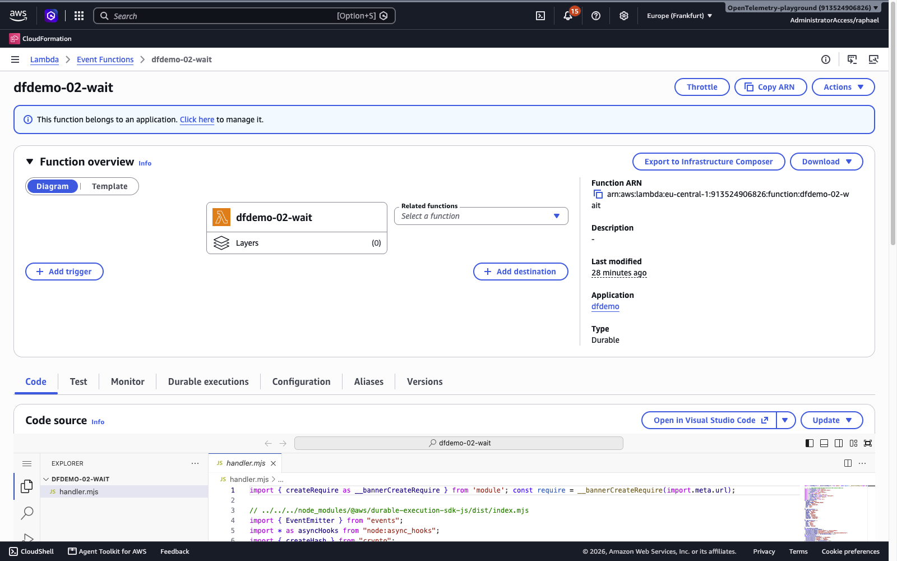

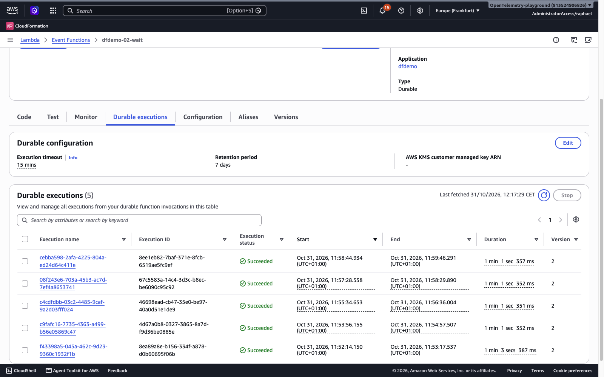

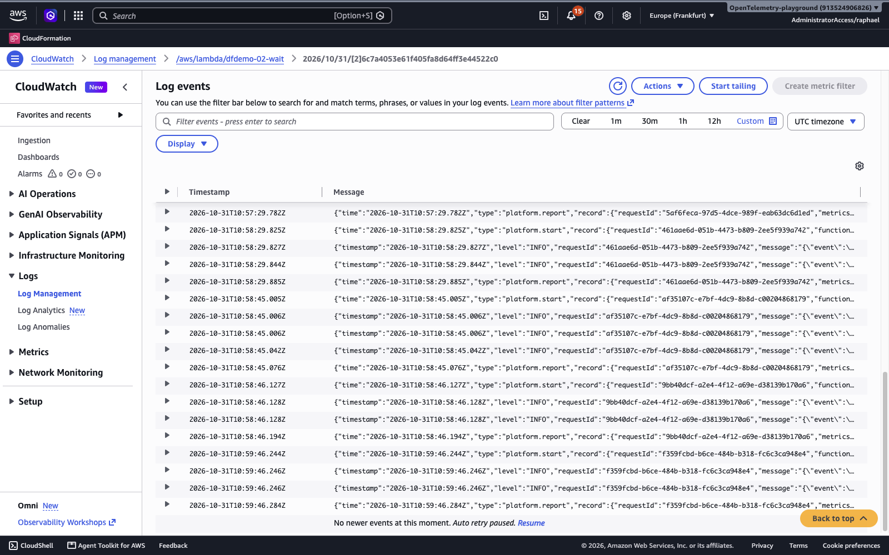
Durable execution drill-down (console)

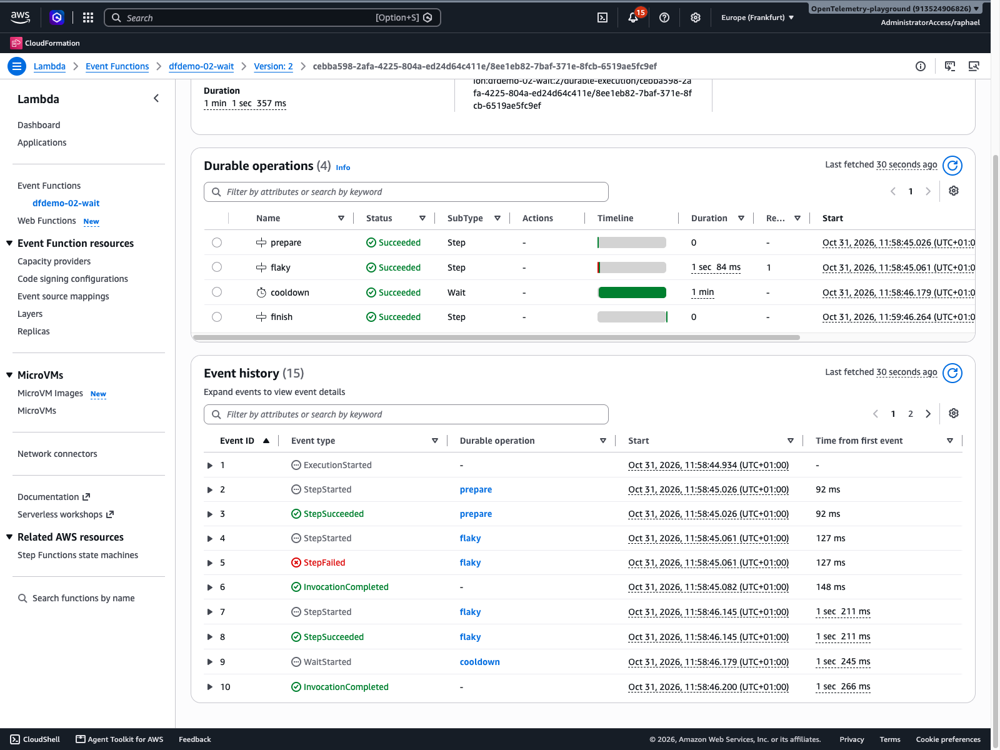

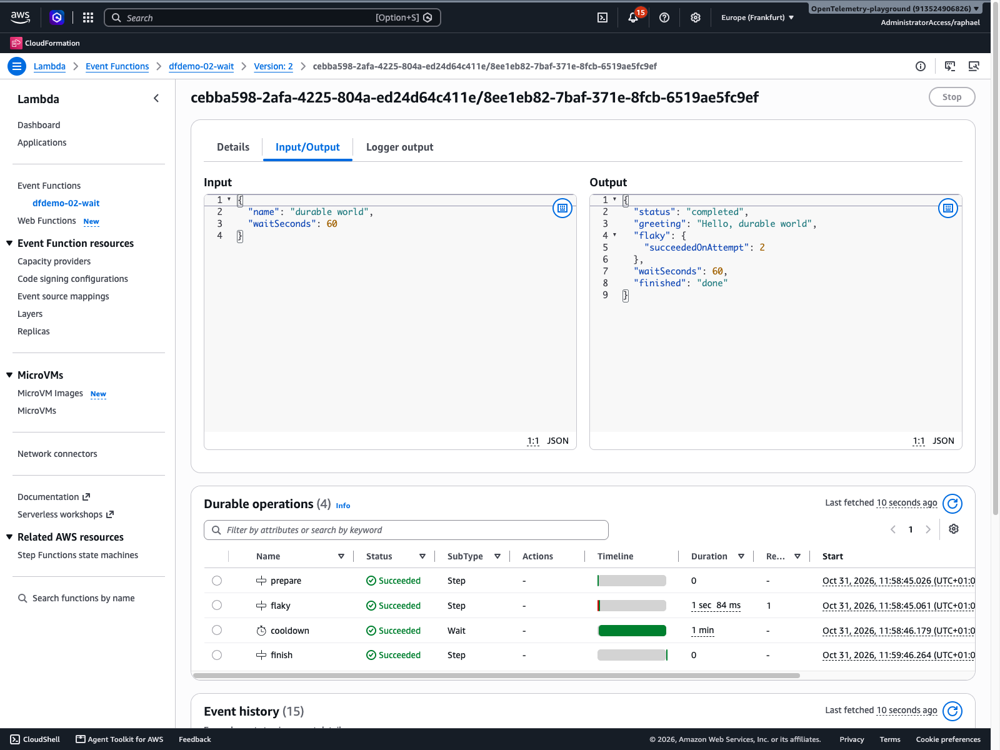

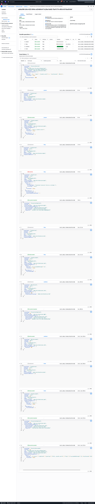
Prompt that would generate this
Extend the step 01 durable function into dfdemo-02-wait. Event: { name?: string, waitSeconds?: number } with waitSeconds defaulting to 60.
Keep the "prepare" step and the "flaky" step (fails on attempt 1, retry strategy maxAttempts 3, initialDelay 1 s, maxDelay 5 s, backoffRate 2.0; returns { succeededOnAttempt: stepCtx.attempt }).
After "flaky" add `await context.wait("cooldown", { seconds: waitSeconds })`, then a step "finish" that logs { event: "finish_body_executed" } and returns "done".
Return { status: "completed", greeting, flaky, waitSeconds, finished }.
Comment that the function is not running while it waits. SAM: dfdemo-02-wait, 256 MB, 30 s timeout, DurableConfig ExecutionTimeout 900, alias live; request.json { "name": "durable world", "waitSeconds": 60 }.
Provide a script that captures the Lambda REPORT duration and billed duration for each invocation and compares their sum with the execution's wall-clock time.Invoke a model, fail, retry: the first call is replayed, not re-invoked
Outline bullet
Invoke a model async, then wait. Tries to set the result. (Reworked per the presenter's decision: step B fails once and is retried; step A's model call is replayed from its checkpoint.)
Goal
Two Bedrock calls in two durable steps. Step A succeeds and is checkpointed. Step B calls Bedrock, then fails on its first attempt (request flag failStepBAttempts: 1) and is retried. The retry shows that A's model call is not made again: it is replayed from the checkpoint.
What to say
- Step A asks the model for a one-sentence answer. The answer is checkpointed.
- Step B asks the model to shorten A's answer, then throws SimulatedStepFailure on attempt 1. The failure is raised after the model returned, so the retry visibly repeats the model call.
- On the retry the handler replays from the top. Step A returns the stored text with no Bedrock call. Only B calls the model again.
- Evidence (a) to (d) below: three Bedrock request IDs, A logged once, B logged twice, same A output.
- Correction to the brief: the handler ran twice, not three times. One failed attempt means two invocations; three would need failStepBAttempts: 2.
Code excerpt (final code)
const a = await context.step('model-a', async () => {
const { text, bedrockRequestId } = await converse(prompt)
console.log(JSON.stringify({ event: 'step_a_bedrock_call', bedrockRequestId }))
return text
})
const b = await context.step('model-b', async (stepCtx) => {
const { text, bedrockRequestId } = await converse(`Shorten this to five words: ${a}`)
console.log(JSON.stringify({ event: 'step_b_bedrock_call', attempt: stepCtx.attempt, bedrockRequestId }))
if (stepCtx.attempt <= failStepBAttempts) {
throw new SimulatedStepFailure(`Simulated failure of step B on attempt ${stepCtx.attempt}`)
}
return text
}, {
retryStrategy: (error, attemptCount) =>
error.name === 'SimulatedStepFailure' && attemptCount <= failStepBAttempts
? { shouldRetry: true, delay: { seconds: 2 } }
: { shouldRetry: false },
})
return { status: 'completed', modelId: MODEL_ID, stepA: a, stepB: b, failStepBAttempts }Invocation
| Function | dfdemo-03-model-replay:2 |
|---|---|
| Request ID (x-amzn-RequestId) | 2090852f-69ce-4103-9c11-c5121b16e8c2 |
| Durable execution ID | fa4cab4c-0aed-3898-bf48-1df156818abc |
| Durable execution ARN | arn:aws:lambda:eu-central-1:913524906826:function:dfdemo-03-model-replay:2/durable-execution/2a254ee5-8352-423d-b2c4-2d6aee575b47/fa4cab4c-0aed-3898-bf48-1df156818abc |
| Status | SUCCEEDED |
| Started / ended | 2026-10-31T12:00:14.344000+01:00 / 2026-10-31T12:00:19.385000+01:00 (5.0 s wall clock) |
{
"prompt": "In one sentence, explain what a checkpoint is in a durable workflow.",
"failStepBAttempts": 1
}{
"StatusCode": 202,
"ExecutedVersion": null,
"DurableExecutionArn": "arn:aws:lambda:eu-central-1:913524906826:function:dfdemo-03-model-replay:2/durable-execution/2a254ee5-8352-423d-b2c4-2d6aee575b47/fa4cab4c-0aed-3898-bf48-1df156818abc",
"Headers": {
"x-amzn-RequestId": "2090852f-69ce-4103-9c11-c5121b16e8c2"
},
"Body": ""
}{
"status": "completed",
"modelId": "global.anthropic.claude-haiku-4-5-20251001-v1:0",
"stepA": "A checkpoint is a saved state of a workflow that allows it to resume from that point if interrupted, rather than restarting from the beginning.",
"stepB": "Checkpoint: resume workflow from interruption.",
"failStepBAttempts": 1
}Evidence (a) to (d)
Execution: id fa4cab4c-0aed-3898-bf48-1df156818abc (durable execution name 2a254ee5-8352-423d-b2c4-2d6aee575b47), status SUCCEEDED. ARN: arn:aws:lambda:eu-central-1:913524906826:function:dfdemo-03-model-replay:2/durable-execution/2a254ee5-8352-423d-b2c4-2d6aee575b47/fa4cab4c-0aed-3898-bf48-1df156818abc Lambda request id (async invoke, x-amzn-RequestId): 2090852f-69ce-4103-9c11-c5121b16e8c2. Request: failStepBAttempts: 1.
SDK note: the attempt number IS exposed (stepCtx.attempt), so no error-type-plus-flag workaround was needed for the attempt counter. The retry strategy still filters on the error name SimulatedStepFailure; the failure is thrown after the Bedrock call returns.
(a) Durable history (history.json)
| EventId | Event | Step | Detail |
|---|---|---|---|
| 2 | StepStarted | model-a | |
| 3 | StepSucceeded | model-a | RetryDetails.CurrentAttempt: 1. The only model-a StepSucceeded; no second StepStarted for model-a. |
| 4 | StepStarted | model-b | |
| 5 | StepFailed | model-b | CurrentAttempt: 1, NextAttemptDelaySeconds: 2 |
| 6 | InvocationCompleted | end of invocation 1 | |
| 7 | StepStarted | model-b | attempt 2 (model-a is not started again) |
| 8 | StepSucceeded | model-b | CurrentAttempt: 2 |
| 9, 10 | InvocationCompleted, ExecutionSucceeded |
(b) Plain console.log in CloudWatch (logs.txt)
- Step A body log
step_a_bedrock_callappears once: line 4, Bedrock x-amzn-requestid900c5254-190f-46d8-a1b9-5167903dde7f. - Step B body log
step_b_bedrock_callappears twice: line 5 (attempt 1,dd047786-60ea-4737-94db-c59510c9639a) and line 9 (attempt 2,54a46a9c-4f6a-46c6-bec9-a98c306d28d6). - The second invocation (lines 7-9) has
handler_invokedand the step B log only; there is nostep_a_bedrock_call, so A was replayed from the checkpoint.
(c) Invocation and Bedrock call counts
- Bedrock calls: 3 (A once, B twice), three distinct request ids above.
- Handler invocations: 2, not 3. logs.txt has two
handler_invoked(lines 3 and 8, Lambda request ids406863ae-aa7f-4d5f-8bb3-abac471dd8d3andc602406a-6cf6-4193-be3e-81912a6f8c8b) and history.json has two InvocationCompleted before ExecutionSucceeded. With one failed attempt of B the handler runs twice; the brief's "3 invocations" would needfailStepBAttempts: 2. The request was left as specified (1).
(d) A's output identical across invocations
- history.json truncates step results (
"Result":{"Truncated":true}), so the text is not in the history. - A's body ran once (b), and its checkpointed text is what invocation 2 used to build B's prompt. The final result in execution.json carries
stepA: "A checkpoint is a saved state of a workflow that allows it to resume from that point if interrupted, rather than restarting from the beginning." - Limit: the handler does not log A's text in each invocation, so identity across invocations is shown by A running once and being returned from the checkpoint, not by comparing two printed strings.
Screenshots

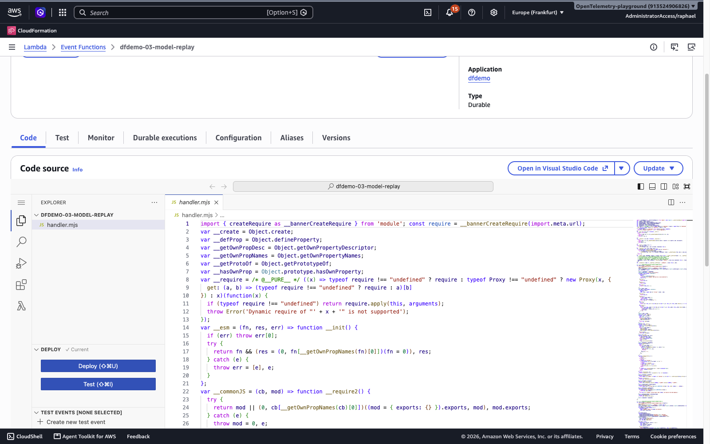

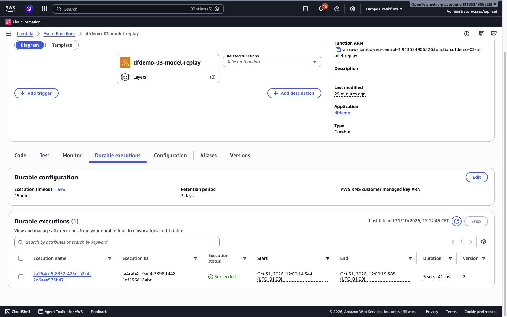

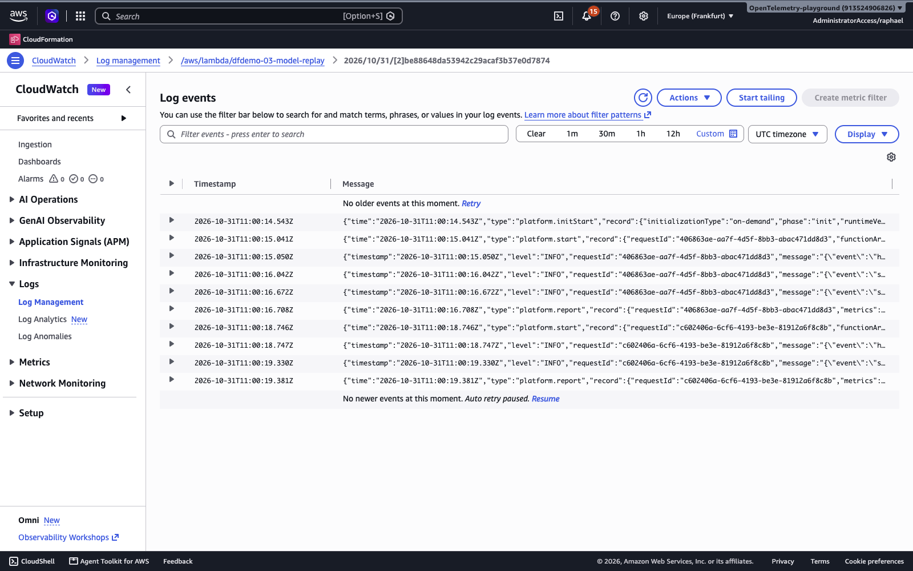
Durable execution drill-down (console)

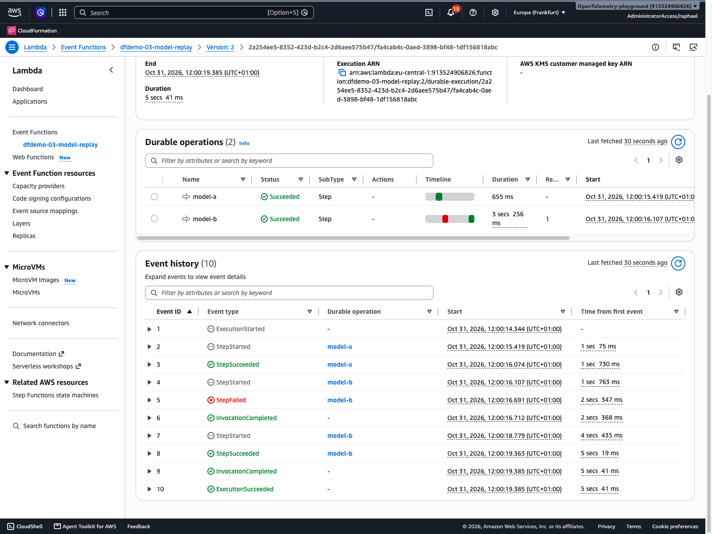

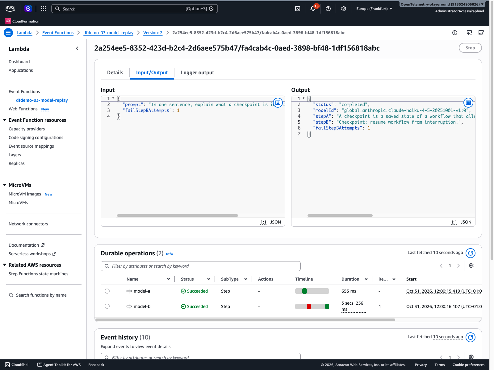

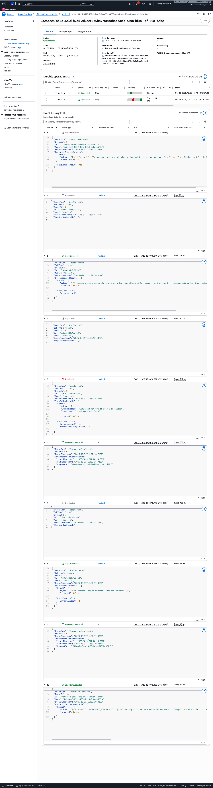
Prompt that would generate this
Create a durable Lambda dfdemo-03-model-replay (TypeScript ESM, @aws/durable-execution-sdk-js, @aws-sdk/client-bedrock-runtime) that proves model calls are replayed from checkpoints, not re-invoked.
Event: { prompt?: string, failStepBAttempts?: number } (defaults: "In one sentence, explain what a checkpoint is in a durable workflow.", 1).
Model: process.env.MODEL_ID ?? SPECIALIST_MODEL from ../../lib/models.js. A helper converse(prompt) uses ConverseCommand with maxTokens 120, temperature 0 and returns { text, bedrockRequestId: response.$metadata.requestId }.
Define class SimulatedStepFailure extends Error with name "SimulatedStepFailure".
Handler: log { event: "handler_invoked", requestId }. Step "model-a": converse(prompt), log { event: "step_a_bedrock_call", bedrockRequestId }, return text. Step "model-b" (receives stepCtx): converse("Shorten this to five words: " + a), log { event: "step_b_bedrock_call", attempt: stepCtx.attempt, bedrockRequestId }, then throw SimulatedStepFailure while stepCtx.attempt <= failStepBAttempts; otherwise return text. Use a custom retryStrategy: retry with a 2 s delay only for error.name === "SimulatedStepFailure" and attemptCount <= failStepBAttempts, else shouldRetry false.
Return { status: "completed", modelId, stepA, stepB, failStepBAttempts }. Note in a header comment that stepCtx.attempt exposes the attempt number in SDK 3.x.
SAM: 512 MB, 60 s, bedrock:InvokeModel permissions for the specialist (Haiku) model. request.json: { "prompt": "In one sentence, explain what a checkpoint is in a durable workflow.", "failStepBAttempts": 1 }.First agent with the Strands SDK
Outline bullet
Introduce the Strands SDK to build the first agent.
Goal
Run a Strands Agent with one tool (monthly_payment) inside one durable step. The whole agent loop (model calls and tool calls) is checkpointed as a single unit.
What to say
- A Strands agent is a model, a system prompt and tools. Here the tool computes a loan payment.
- The agent runs inside context.step("agent"). Model calls and tool calls happen inside the step; only the final answer is checkpointed.
- If the step fails, the retry strategy (3 attempts, exponential backoff) re-runs the whole loop. If it succeeds, a replay never calls the model again.
- The answer is $66.48 per month, computed by the tool, not guessed by the model.
Code excerpt (final code)
const monthlyPayment = tool({
name: 'monthly_payment',
description: 'Calculate the monthly payment of a loan with a fixed annual interest rate.',
inputSchema: z.object({
principal: z.number().describe('Loan amount'),
annualRatePercent: z.number().describe('Annual interest rate in percent'),
months: z.number().describe('Loan term in months'),
}),
callback: async ({ principal, annualRatePercent, months }) => {
const r = annualRatePercent / 100 / 12
const payment = r === 0 ? principal / months : (principal * r) / (1 - Math.pow(1 + r, -months))
return `Monthly payment: ${payment.toFixed(2)}`
},
})
const bedrockRetry = createRetryStrategy({
maxAttempts: 3,
initialDelay: { seconds: 2 },
maxDelay: { seconds: 30 },
backoffRate: 2.0,
})
export const handler = withDurableExecution(async (
event: AgentEvent,
context: DurableContext
): Promise<Record<string, unknown>> => {
const answer = await context.step('agent', async () => {
const agent = new Agent({
model,
systemPrompt: 'You are a concise purchasing assistant. Use the monthly_payment tool for any loan calculation.',
tools: [monthlyPayment],
printer: false,
})
const result = await agent.invoke(event.request)
return result.toString()
}, { retryStrategy: bedrockRetry })
return { status: 'completed', answer }Invocation
| Function | dfdemo-04-agent:2 |
|---|---|
| Request ID (x-amzn-RequestId) | 5c75720f-65e8-454a-9a92-3d13bee3fc7c |
| Durable execution ID | 8bd7d5a2-6b60-3e59-b7b0-fe7b8001e75c |
| Durable execution ARN | arn:aws:lambda:eu-central-1:913524906826:function:dfdemo-04-agent:2/durable-execution/1c04a5df-2ca1-4432-81d3-753a65453630/8bd7d5a2-6b60-3e59-b7b0-fe7b8001e75c |
| Status | SUCCEEDED |
| Started / ended | 2026-10-31T12:01:56.798000+01:00 / 2026-10-31T12:01:59.094000+01:00 (2.3 s wall clock) |
{
"request": "I want to finance a $1,500 laptop over 24 months at 6% annual interest. What is my monthly payment?"
}{
"StatusCode": 202,
"ExecutedVersion": null,
"DurableExecutionArn": "arn:aws:lambda:eu-central-1:913524906826:function:dfdemo-04-agent:2/durable-execution/1c04a5df-2ca1-4432-81d3-753a65453630/8bd7d5a2-6b60-3e59-b7b0-fe7b8001e75c",
"Headers": {
"x-amzn-RequestId": "5c75720f-65e8-454a-9a92-3d13bee3fc7c"
},
"Body": ""
}{
"status": "completed",
"answer": "Your monthly payment would be **$66.48** for a $1,500 laptop financed over 24 months at 6% annual interest."
}History: ExecutionStarted → StepStarted(agent) → StepSucceeded(agent) → InvocationCompleted → ExecutionSucceeded. One step, one invocation: the agent loop is invisible to the history except for its final result.
Screenshots

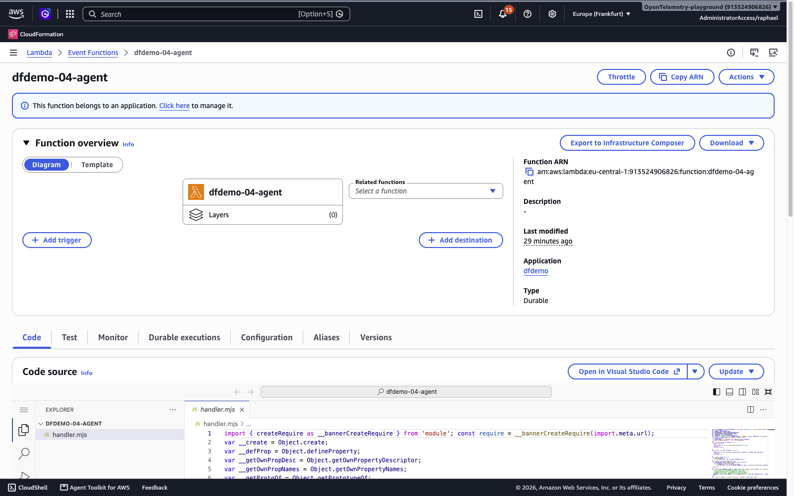

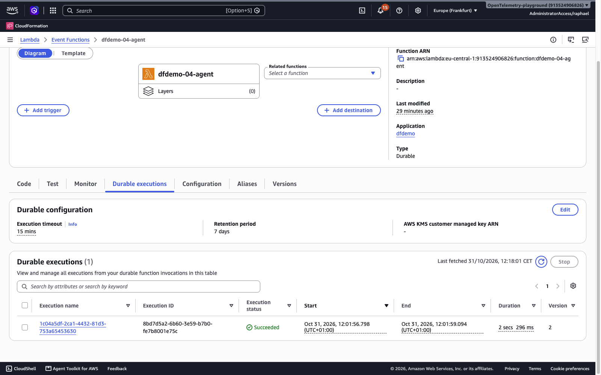

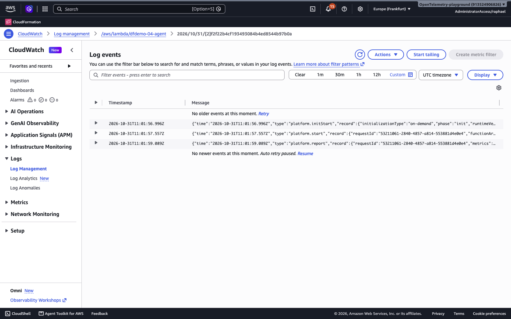
Durable execution drill-down (console)

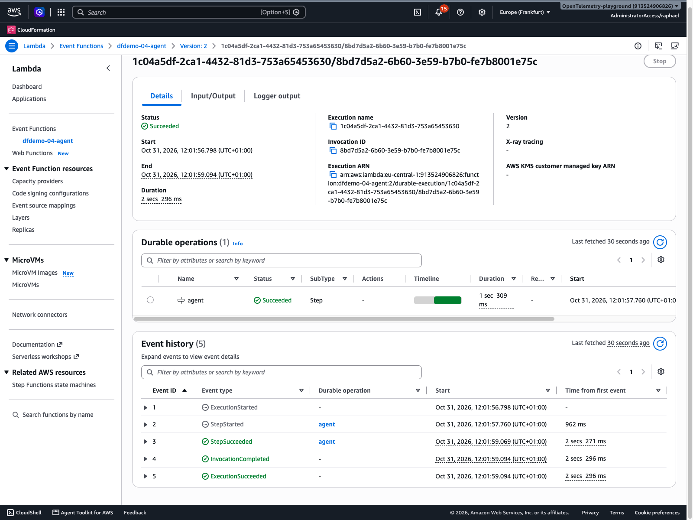

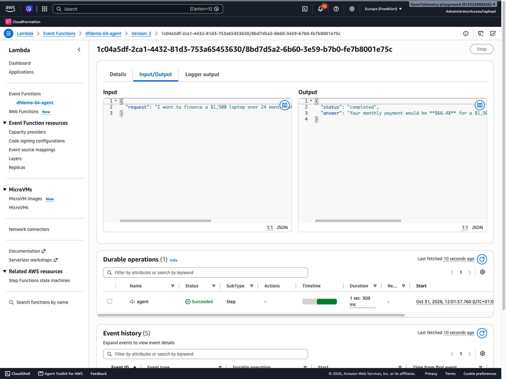

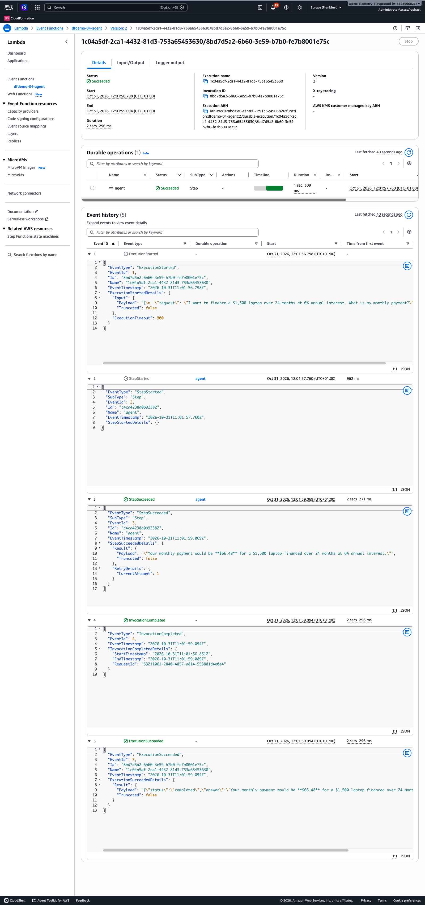
Prompt that would generate this
Create a durable Lambda dfdemo-04-agent (TypeScript ESM) with @aws/durable-execution-sdk-js, @strands-agents/sdk and zod.
Define a Strands tool "monthly_payment" ("Calculate the monthly payment of a loan with a fixed annual interest rate.") with a zod input schema { principal: number, annualRatePercent: number, months: number } and the standard annuity formula (r = annualRatePercent/100/12; payment = principal*r/(1-(1+r)^-months), or principal/months if r is 0). It returns `Monthly payment: ${payment.toFixed(2)}`.
Model: createModel(process.env.AGENT_MODEL_ID ?? SPECIALIST_MODEL) from ../../lib/models.js.
Handler: event { request: string }. Run `context.step("agent", ...)` that builds new Agent({ model, systemPrompt: "You are a concise purchasing assistant. Use the monthly_payment tool for any loan calculation.", tools: [monthlyPayment], printer: false }), calls agent.invoke(event.request) and returns result.toString(). Retry strategy: createRetryStrategy({ maxAttempts: 3, initialDelay 2 s, maxDelay 30 s, backoffRate 2.0 }). Return { status: "completed", answer }.
Explain in a header comment that the whole agent loop is one checkpointed unit. SAM: 1024 MB, 120 s, Bedrock invoke permissions, alias live. request.json: { "request": "I want to finance a $1,500 laptop over 24 months at 6% annual interest. What is my monthly payment?" }.Split the agent into multiple Lambdas for permission boundaries
Outline bullet
Split the agent into multiple Lambdas for permission boundaries.
Goal
A coordinator durable function plans, fans out to specialist Lambdas with context.invoke inside context.parallel, and synthesizes. Each specialist is its own function with its own IAM role, so each has only the permissions it needs. No tracing in this step.
What to say
- The coordinator has three durable phases: plan (an agent picks the specialists), parallel invoke, synthesize.
- Each specialist is a separate Lambda. The coordinator role may invoke exactly those five functions and call its Bedrock model. Each specialist role may call only its own Bedrock model.
- context.invoke checkpoints the result and suspends the coordinator while the specialist runs, so you do not pay for the coordinator while it waits.
- Each branch catches errors and returns an "unavailable" text, so one failed specialist does not fail the whole parallel block.
- This run: the planner chose Price Research and Delivery & Logistics for a laptop purchase. The router decided; we did not.
Code excerpt (final code)
const results = await context.parallel<{ name: string; response: string }>('specialists',
plan.specialists.map((spec) => ({
name: spec.name,
func: async (ctx) => {
try {
const specialist = SPECIALISTS[spec.name]
if (!specialist) {
throw new Error(`Unknown specialist: ${spec.name}`)
}
const result = await ctx.invoke<{ prompt: string }, { response: string }>(
spec.name,
specialist.functionName,
{ prompt: spec.prompt }
)
return { name: spec.name, response: result.response }
} catch (err) {
// Graceful degradation: return failure message so the synthesis
// agent can note the gap instead of the entire parallel block failing.
const display = SPECIALISTS[spec.name]?.display ?? spec.name
return { name: spec.name, response: `[${display} unavailable: ${err instanceof Error ? err.message : 'unknown error'}]` }
}
},
}))
)
// Build specialistResults from checkpointed return values — safe on replay.
const specialistResults: Record<string, string> = {}
for (const item of results.succeeded()) {
specialistResults[item.result.name] = item.result.response
}
context.logger.info('specialists_completed', { count: plan.specialists.length })Invocation
| Function | dfdemo-05-coordinator:2 |
|---|---|
| Request ID (x-amzn-RequestId) | 449c0e35-564e-44cb-b36c-617bc32f3b61 |
| Durable execution ID | 3372c20d-790d-3125-83f0-d6419592a234 |
| Durable execution ARN | arn:aws:lambda:eu-central-1:913524906826:function:dfdemo-05-coordinator:2/durable-execution/753847a5-69d4-4b57-a464-f0b6da883777/3372c20d-790d-3125-83f0-d6419592a234 |
| Status | SUCCEEDED |
| Started / ended | 2026-10-31T12:02:39.026000+01:00 / 2026-10-31T12:03:15.571000+01:00 (36.5 s wall clock) |
{
"request": "I want to buy a 15-inch laptop for software development, budget around $1,500",
"requireApproval": false
}{
"StatusCode": 202,
"ExecutedVersion": null,
"DurableExecutionArn": "arn:aws:lambda:eu-central-1:913524906826:function:dfdemo-05-coordinator:2/durable-execution/753847a5-69d4-4b57-a464-f0b6da883777/3372c20d-790d-3125-83f0-d6419592a234",
"Headers": {
"x-amzn-RequestId": "449c0e35-564e-44cb-b36c-617bc32f3b61"
},
"Body": ""
}{
"status": "completed",
"recommendation": "## Summary\n\nThe buyer is looking to purchase a 15-inch laptop for software development with a budget of approximately $1,500. Two specialists were consulted: a pricing analyst and a delivery/logistics specialist. The pricing analysis was incomplete due to insufficient specification details provided upfront, meaning the buyer does not yet have a validated sense of fair market value for their specific configuration. The logistics analysis was thorough and actionable. Before proceeding to purchase, [... truncated in report, 4552 chars total]",
"routing": {
"called": [
"Price Research",
"Delivery & Logistics"
],
"skipped": [
"Financing",
"Risk Assessment",
"Contract Review"
]
}
}Permission boundary in the template (coordinator invoke permissions)
FunctionName: dfdemo-05-coordinator
- bedrock:InvokeModel
- bedrock:InvokeModelWithResponseStream
- !Sub arn:aws:bedrock:*::foundation-model/${CoordinatorModelId}
- !Sub arn:aws:bedrock:${AWS::Region}:${AWS::AccountId}:inference-profile/global.${CoordinatorModelId}
Action: lambda:InvokeFunction
- !GetAtt Fn05Price.Arn
- !GetAtt Fn05Financing.Arn
- !GetAtt Fn05Delivery.Arn
- !GetAtt Fn05Risk.Arn
- !GetAtt Fn05Contract.Arn
DurableConfig:History: ExecutionStarted → StepStarted(plan) → StepSucceeded(plan) → ContextStarted(specialists) → ContextStarted(price-research) → ContextStarted(delivery) → ChainedInvokeStarted(price-research) → ChainedInvokeStarted(delivery) → InvocationCompleted → ChainedInvokeSucceeded(price-research) → ContextSucceeded(price-research) → InvocationCompleted → … (19 events in total).
Screenshots

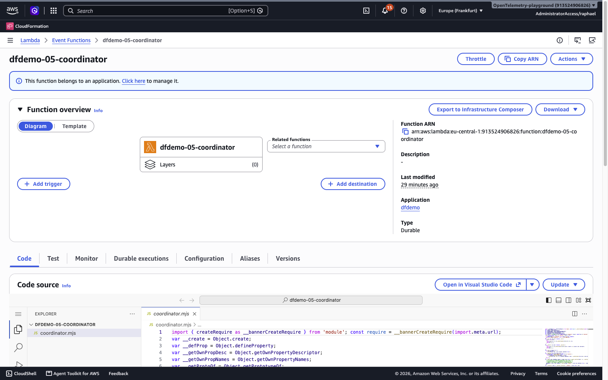

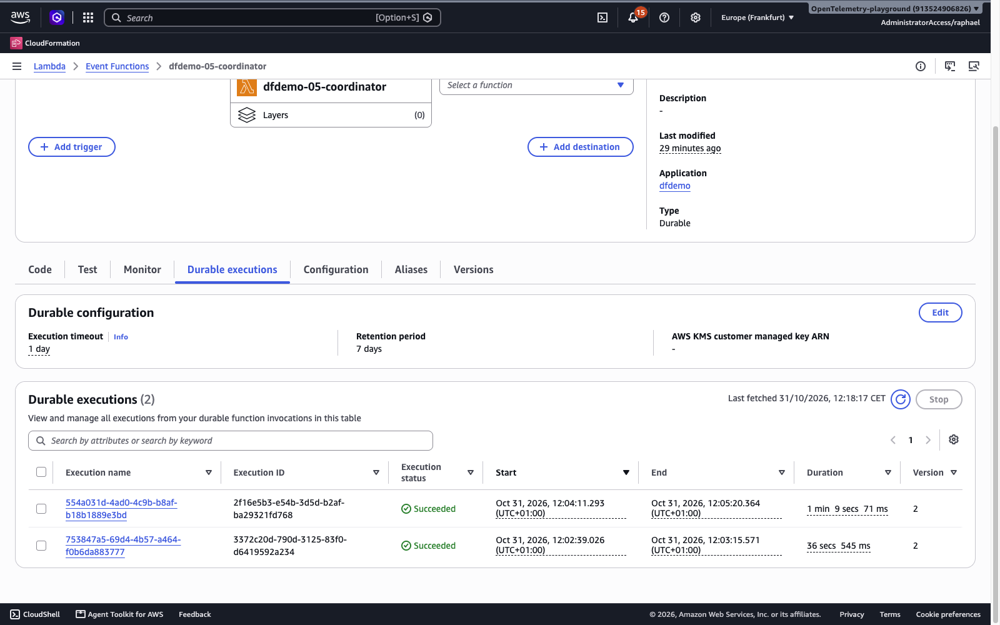

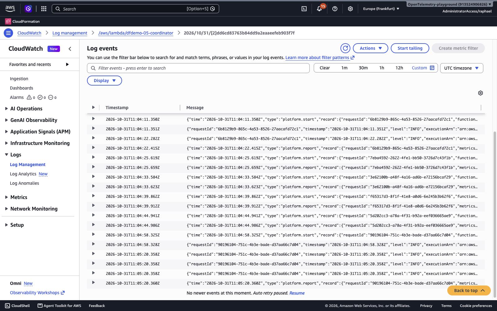
Durable execution drill-down (console)

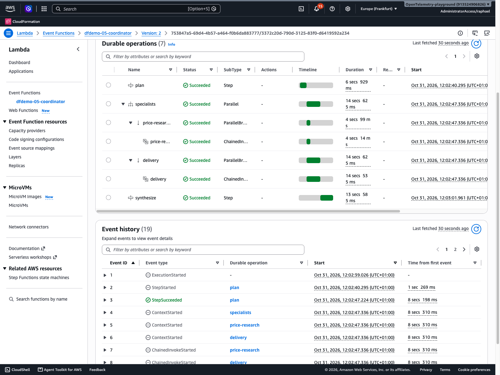


Prompt that would generate this
Split the purchasing agent into a durable coordinator and five specialist Lambdas (price-research, financing, delivery, risk-assessment, contract-review).
Coordinator (src/steps/05-split/coordinator.ts, TypeScript ESM, withDurableExecution, Strands Agent, zod): event { request: string, requireApproval?: boolean }.
1. context.step("plan"): a Strands Agent with the coordinator-plan prompt and a tool create_analysis_plan (zod: specialists: array of { name: enum of the five specialist keys, prompt: string }). Capture the tool input in a closure, throw if the tool was not called. Retry: createRetryStrategy maxAttempts 3, initialDelay 2 s, maxDelay 30 s, backoffRate 2, JitterStrategy.FULL.
2. context.parallel("specialists", ...) with one branch per planned specialist; each branch calls ctx.invoke(name, functionName, { prompt }) where function names come from env vars PRICE_RESEARCH_FUNCTION, FINANCING_FUNCTION, DELIVERY_FUNCTION, RISK_ASSESSMENT_FUNCTION, CONTRACT_REVIEW_FUNCTION. Wrap each branch in try/catch and return { name, response: "[<display> unavailable: <message>]" } on error. Rebuild results from results.succeeded().
3. context.step("synthesize") with the coordinator-synthesis prompt over "Purchase request: ...\n\nSpecialist findings:\n\n## <Display>\n<text>" and the same retry strategy; throw on an empty answer.
4. If requireApproval, await context.waitForCallback("approval", ..., { timeout: { hours: 24 }, serdes: defaultSerdes }) and return status "rejected" when not approved.
Use context.logger for plan_created, specialists_completed, recommendation_generated, request_completed. Return { status: "completed" | "approved", recommendation, routing: { called, skipped } }. Pass `{ plugins: loadOtelPlugins() }` as second argument of withDurableExecution (empty list when OTEL_PLUGIN is unset).
Specialist (specialist.ts): one shared handler; env PROMPT_NAME selects the prompt and tools; input { prompt }, output { response }; use SPECIALIST_MODEL.
SAM: generate template.yaml with scripts/gen-template.ts: dfdemo-05-coordinator plus dfdemo-05-{price,financing,delivery,risk,contract}, one IAM role each, coordinator allowed lambda:InvokeFunction only on the five specialists, Bedrock permissions scoped to each function's model, alias live, DurableConfig on the coordinator. request.json: { "request": "I want to buy a 15-inch laptop for software development, budget around $1,500", "requireApproval": false }.See the full agent in action
Outline bullet
See the full agent in action.
Goal
Run the same coordinator with the demo input (a used 2020 Honda Civic around $18,000). All five specialists are consulted in parallel; the synthesis agent writes the recommendation. Same function as step 05, different input.
What to say
- Same function as step 05. Only the input changes: a used car this time, so the planner picks all five specialists.
- The five specialists run in parallel; the coordinator is suspended while they work.
- The synthesis step turns five findings into one recommendation with next steps.
- Execution took about 69 s wall clock. The result is the recommendation text plus the routing (called/skipped).
Code excerpt (final code)
const response = await context.step('synthesize', async () => {
const findings = plan.specialists
.map((spec) => {
const display = SPECIALISTS[spec.name]?.display ?? spec.name
const result = specialistResults[spec.name] ?? '(no response)'
return `## ${display}\n${result}`
})
.join('\n\n')
const synthesisInput = `Purchase request: ${event.request}\n\nSpecialist findings:\n\n${findings}`
const agent = new Agent({ model, systemPrompt: synthesisPrompt, printer: false })
const result = await agent.invoke(synthesisInput)
const text = result.toString()
if (!text || text === '[object Object]') {
throw new Error('Synthesis agent returned empty response')
}
return text
}, { retryStrategy: bedrockRetry })Invocation
| Function | dfdemo-05-coordinator:2 |
|---|---|
| Request ID (x-amzn-RequestId) | a2b4625b-2244-4b32-b94d-efe8b6700c67 |
| Durable execution ID | 2f16e5b3-e54b-3d5d-b2af-ba29321fd768 |
| Durable execution ARN | arn:aws:lambda:eu-central-1:913524906826:function:dfdemo-05-coordinator:2/durable-execution/554a031d-4ad0-4c9b-b8af-b18b1889e3bd/2f16e5b3-e54b-3d5d-b2af-ba29321fd768 |
| Status | SUCCEEDED |
| Started / ended | 2026-10-31T12:04:11.293000+01:00 / 2026-10-31T12:05:20.364000+01:00 (69.1 s wall clock) |
{
"request": "I want to buy a used 2020 Honda Civic for around $18,000",
"requireApproval": false
}{
"StatusCode": 202,
"ExecutedVersion": null,
"DurableExecutionArn": "arn:aws:lambda:eu-central-1:913524906826:function:dfdemo-05-coordinator:2/durable-execution/554a031d-4ad0-4c9b-b8af-b18b1889e3bd/2f16e5b3-e54b-3d5d-b2af-ba29321fd768",
"Headers": {
"x-amzn-RequestId": "a2b4625b-2244-4b32-b94d-efe8b6700c67"
},
"Body": ""
}{
"status": "completed",
"recommendation": "## Summary\n\nThe buyer is looking to purchase a used 2020 Honda Civic for approximately $18,000. This is a reasonable target — the Civic is a well-regarded, high-volume vehicle with strong reliability fundamentals — but four specialists have collectively identified meaningful risks and process steps that must be addressed before committing. The purchase itself is straightforward in structure (one-time transaction, no ongoing obligations beyond ownership), but the risks cluster around three areas: [... truncated in report, 6876 chars total]",
"routing": {
"called": [
"Price Research",
"Financing",
"Delivery & Logistics",
"Contract Review",
"Risk Assessment"
],
"skipped": []
}
}Screenshots

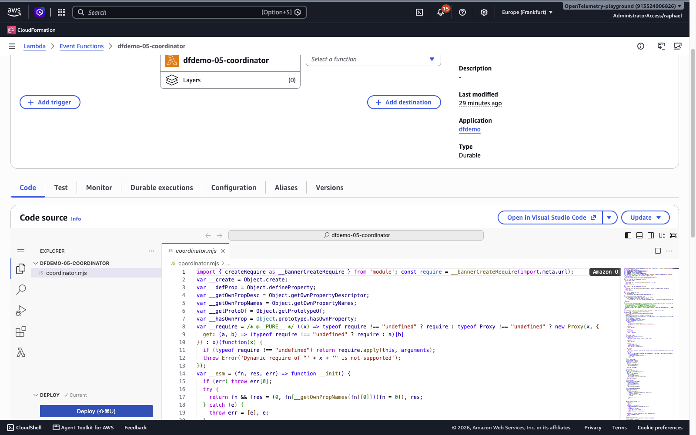

Durable execution drill-down (console)


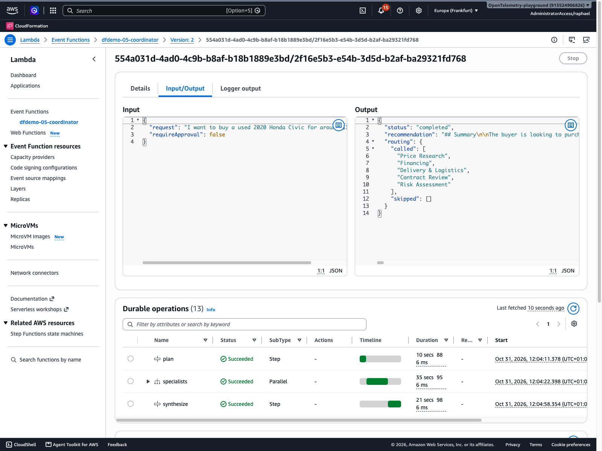


Prompt that would generate this
Using the coordinator from step 05 (deployed as dfdemo-05-coordinator:live), create src/steps/06-full/request.json with { "request": "I want to buy a used 2020 Honda Civic for around $18,000", "requireApproval": false } and an invoke.sh that calls the shared scripts/lib/invoke-step.sh with FUNCTION_NAME=dfdemo-05-coordinator and TIMEOUT_SECONDS large enough for a five-specialist run. The script must invoke asynchronously (--invocation-type Event --payload fileb://request.json) against the alias, poll get-durable-execution until a terminal status, and save request.json, response.json, request-id.txt, durable-execution-arn.txt, durable-execution-id.txt, execution.json, history.json and logs.txt. Fail unless the status is SUCCEEDED.
No new handler code is needed: the full agent is the step 05 coordinator with five specialists.Running it at scale!
Enable X-Ray: only basic tracing info
Outline bullet
Enable X-Ray. Only basic tracing info.
Goal
Duplicate the coordinator and the specialists with Tracing: Active. The same demo input now produces an X-Ray trace. The trace shows Lambda service and function segments, but only basic information.
What to say
- Turning on X-Ray is a one-line property: Tracing: Active. The code does not change.
- In the trace map you see the coordinator and each specialist as Lambda nodes, with durations and the invoke links.
- What you get is basic: Lambda service and function segments and the invocation attempts. Step names, the plan and synthesize phases and retries are not named operations in this trace.
Code excerpt (final code)
Fn07XrayCoordinator:
FunctionName: dfdemo-07-xray-coordinator
CodeUri: src/steps/05-split/
Handler: coordinator.handler
Tracing: ActiveInvocation
| Function | dfdemo-07-xray-coordinator:2 |
|---|---|
| Request ID (x-amzn-RequestId) | 7a08d328-f24f-4029-a989-a76a2ffb989f |
| Durable execution ID | e4ffa2e0-958e-3d26-b2a0-68290637b62b |
| Durable execution ARN | arn:aws:lambda:eu-central-1:913524906826:function:dfdemo-07-xray-coordinator:2/durable-execution/1d506a32-806a-43be-9c14-213d6813aa15/e4ffa2e0-958e-3d26-b2a0-68290637b62b |
| Status | SUCCEEDED |
| Started / ended | 2026-10-31T12:06:44.791000+01:00 / 2026-10-31T12:08:01.716000+01:00 (76.9 s wall clock) |
{
"request": "I want to buy a used 2020 Honda Civic for around $18,000",
"requireApproval": false
}{
"StatusCode": 202,
"ExecutedVersion": null,
"DurableExecutionArn": "arn:aws:lambda:eu-central-1:913524906826:function:dfdemo-07-xray-coordinator:2/durable-execution/1d506a32-806a-43be-9c14-213d6813aa15/e4ffa2e0-958e-3d26-b2a0-68290637b62b",
"Headers": {
"x-amzn-RequestId": "7a08d328-f24f-4029-a989-a76a2ffb989f"
},
"Body": ""
}{
"status": "completed",
"recommendation": "## Purchasing Recommendation: Used 2020 Honda Civic (~$18,000)\n\n---\n\n### Summary\n\nYou are looking to purchase a used 2020 Honda Civic at approximately $18,000. Four specialists reviewed this purchase across pricing, financing, logistics, contract terms, and risk. The overall picture is favorable: the Civic is a strong platform with low inherent depreciation risk, and $18,000 is a fair mid-range price — provided the mileage, trim, and condition actually justify it. The primary risks are not with [... truncated in report, 8100 chars total]",
"routing": {
"called": [
"Price Research",
"Financing",
"Delivery & Logistics",
"Contract Review",
"Risk Assessment"
],
"skipped": []
}
}Trace header of the execution: Root=1-6ae5cbc4-712cf6fd1703fd806783e1ad;Parent=2a45f11bd995a3ca;Sampled=1. invoke time UTC: 2026-10-31T11:06:44Z.
Screenshots

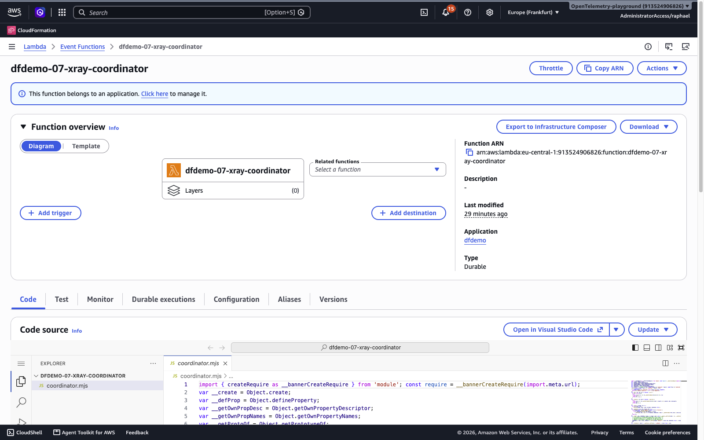


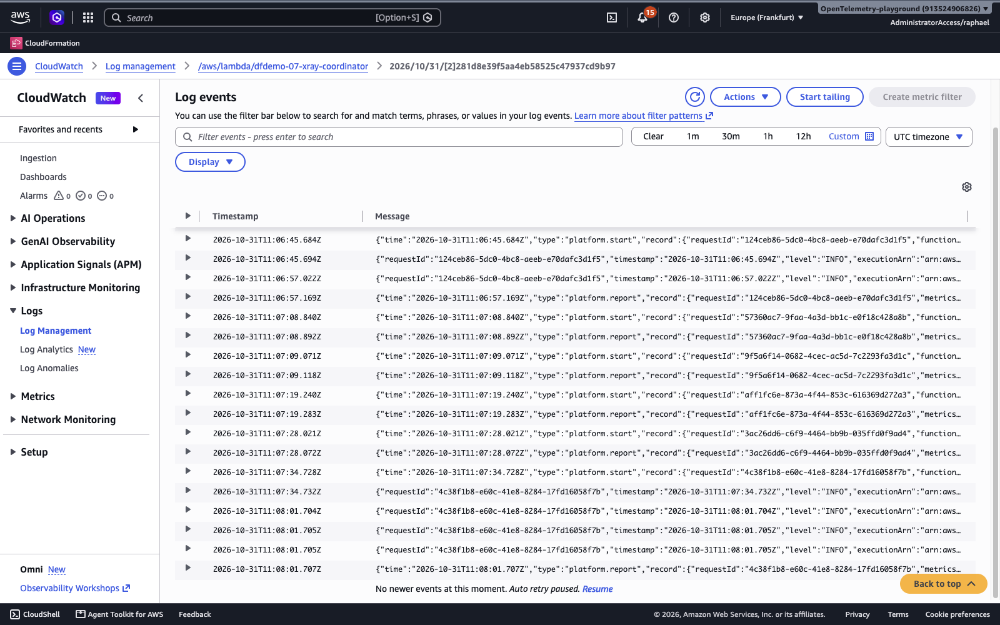

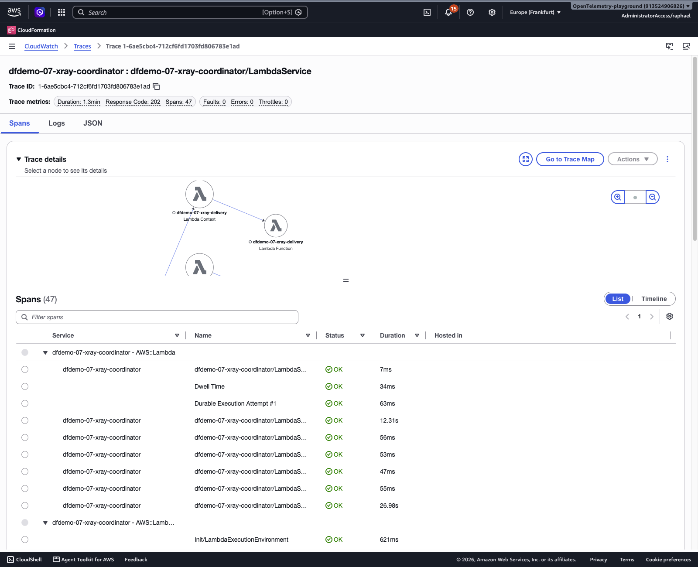
Durable execution drill-down (console)


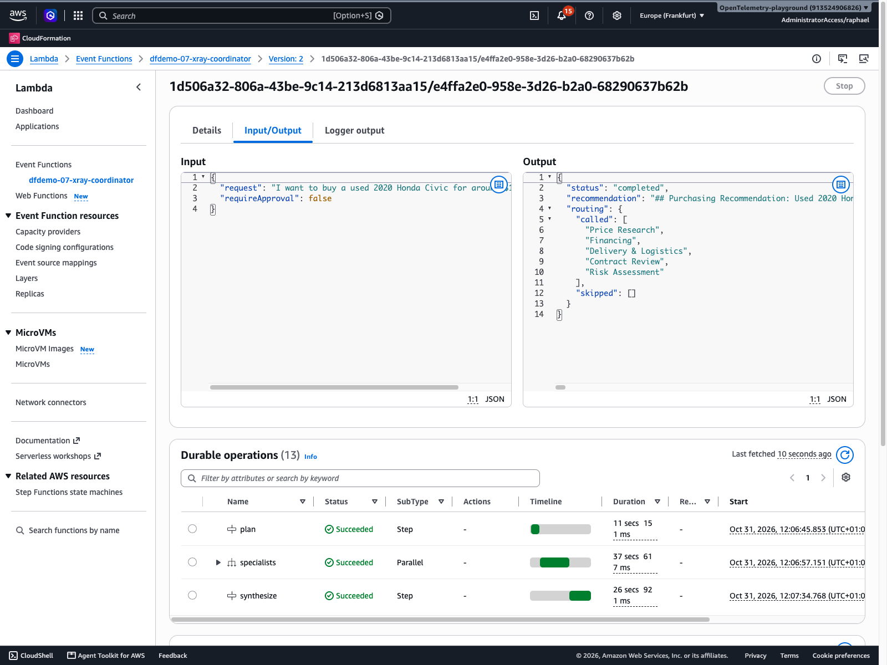


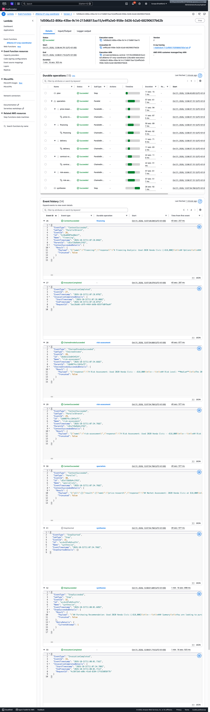
Prompt that would generate this
In scripts/gen-template.ts add a tracing variant for step 07: a coordinator dfdemo-07-xray-coordinator (same handler src/steps/05-split/coordinator.handler, 1536 MB, 300 s timeout, DurableConfig ExecutionTimeout 86400, RetentionPeriodInDays 7, alias live) and five specialists dfdemo-07-xray-{price,financing,delivery,risk,contract} that reuse specialist.handler. Set Tracing: Active on all of them (no layer, no extra policy). The coordinator env vars must point at the 07 specialists, and its lambda:InvokeFunction permission only at those five. Do not set OTEL_PLUGIN. Regenerate template.yaml (SAM Globals cannot carry Metadata, so the template is generated, not hand-written). request.json: the Honda Civic request used in step 06. Record the X-Ray trace ID (Root=1-...) from the logs in artifacts/trace-ids.txt.Add the OTel plugin and enable the OTel layer
Outline bullet
Add the OTel plugin and enable the OTel layer.
Goal
The coordinator gets the ADOT Node.js Lambda layer, the wrapper script AWS_LAMBDA_EXEC_WRAPPER=/opt/otel-handler, and the durable OTel plugin (OTEL_PLUGIN=execution, the workflow-centered view). Specialists stay untraced.
What to say
- Two additions: the OTel layer plus wrapper script, and the durable OTel plugin passed to withDurableExecution.
- The plugin turns durable operations into spans: execution, steps, invokes, retries, waits. The layer exports them.
- The coordinator code is the same file as step 05; the plugin is selected by the OTEL_PLUGIN environment variable.
- ExecutionOtelPlugin gives a workflow-centered view: one trace for the whole execution across invocations.
Code excerpt (final code)
export function loadOtelPlugins(): DurableInstrumentationPluginFactory[] {
const mode = process.env.OTEL_PLUGIN
if (!mode) return []
if (mode === 'execution') return [createExecutionOtelPluginFactory()]
if (mode === 'invocation') return [createInvocationOtelPluginFactory()]
throw new Error(`Unknown OTEL_PLUGIN value: "${mode}"`)
} Fn08OtelCoordinator:
FunctionName: dfdemo-08-otel-coordinator
Tracing: Active
Layers:
- !Sub arn:aws:lambda:${AWS::Region}:901920570463:layer:aws-otel-nodejs-arm64-ver-1-30-2:6
OTEL_PLUGIN: execution
AWS_LAMBDA_EXEC_WRAPPER: /opt/otel-handler
- arn:aws:iam::aws:policy/AWSXRayDaemonWriteAccessInvocation
| Function | dfdemo-08-otel-coordinator:2 |
|---|---|
| Request ID (x-amzn-RequestId) | 28821a75-558d-4865-b7d5-6b62d6bf3cac |
| Durable execution ID | edb32974-ffc3-3431-a72c-9cc3b706a724 |
| Durable execution ARN | arn:aws:lambda:eu-central-1:913524906826:function:dfdemo-08-otel-coordinator:2/durable-execution/5bd43b10-8346-4222-aa12-017dd496f49a/edb32974-ffc3-3431-a72c-9cc3b706a724 |
| Status | SUCCEEDED |
| Started / ended | 2026-10-31T12:08:43.718000+01:00 / 2026-10-31T12:09:52.841000+01:00 (69.1 s wall clock) |
{
"request": "I want to buy a used 2020 Honda Civic for around $18,000",
"requireApproval": false
}{
"StatusCode": 202,
"ExecutedVersion": null,
"DurableExecutionArn": "arn:aws:lambda:eu-central-1:913524906826:function:dfdemo-08-otel-coordinator:2/durable-execution/5bd43b10-8346-4222-aa12-017dd496f49a/edb32974-ffc3-3431-a72c-9cc3b706a724",
"Headers": {
"x-amzn-RequestId": "28821a75-558d-4865-b7d5-6b62d6bf3cac"
},
"Body": ""
}{
"status": "completed",
"recommendation": "## Summary\n\nYou are looking to purchase a used 2020 Honda Civic for approximately $18,000. This is a well-regarded vehicle with a strong reliability track record, and your budget falls squarely within fair market value for a mid-range example. The purchase carries a **low-to-medium overall risk profile** — the platform itself is sound, but the key variable is the specific vehicle's history and mechanical condition. The transaction itself carries additional contractual and financing risks that ar [... truncated in report, 6688 chars total]",
"routing": {
"called": [
"Price Research",
"Financing",
"Delivery & Logistics",
"Contract Review",
"Risk Assessment"
],
"skipped": []
}
}Trace header: Root=1-6ae5cc3b-44cc9da909fe2c2e7aebf8f3;Parent=4e20ac787809628c;Sampled=1.
Screenshots

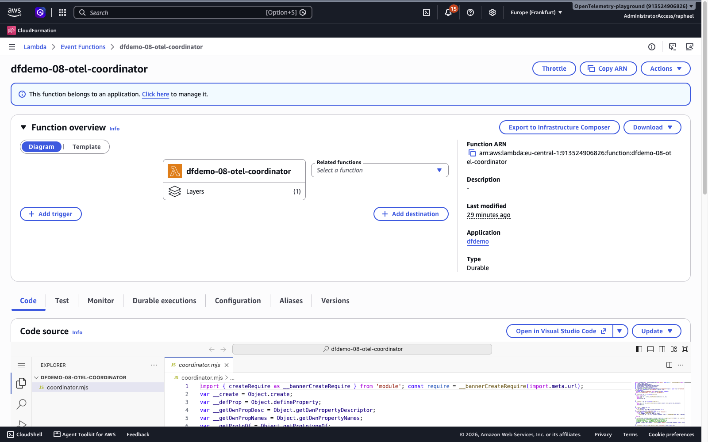

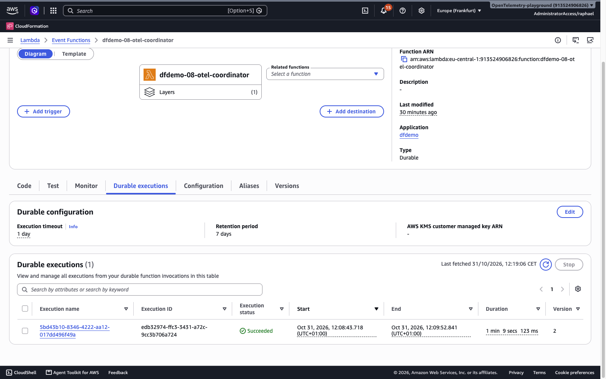

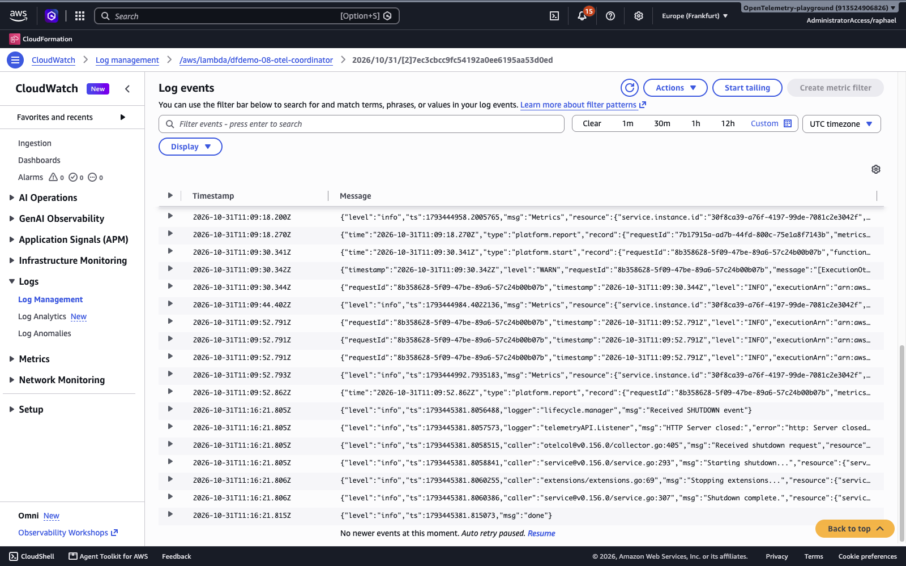
Durable execution drill-down (console)

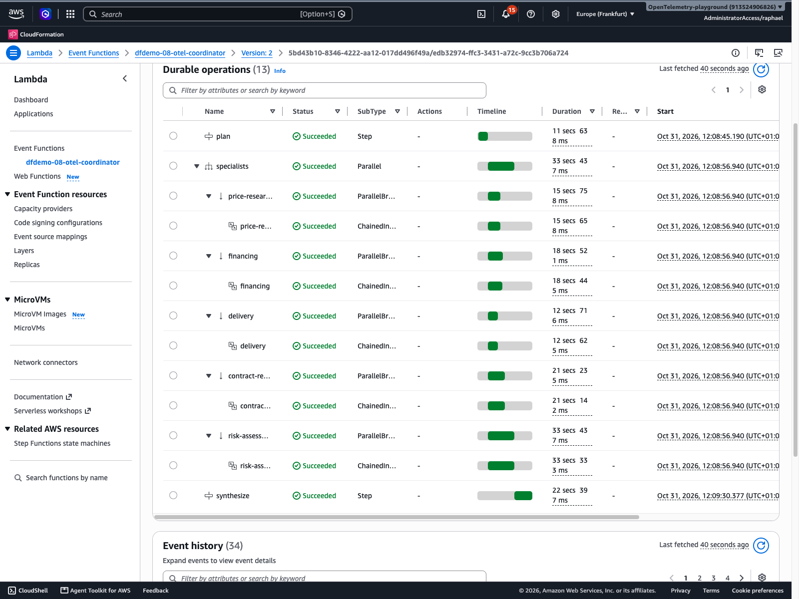

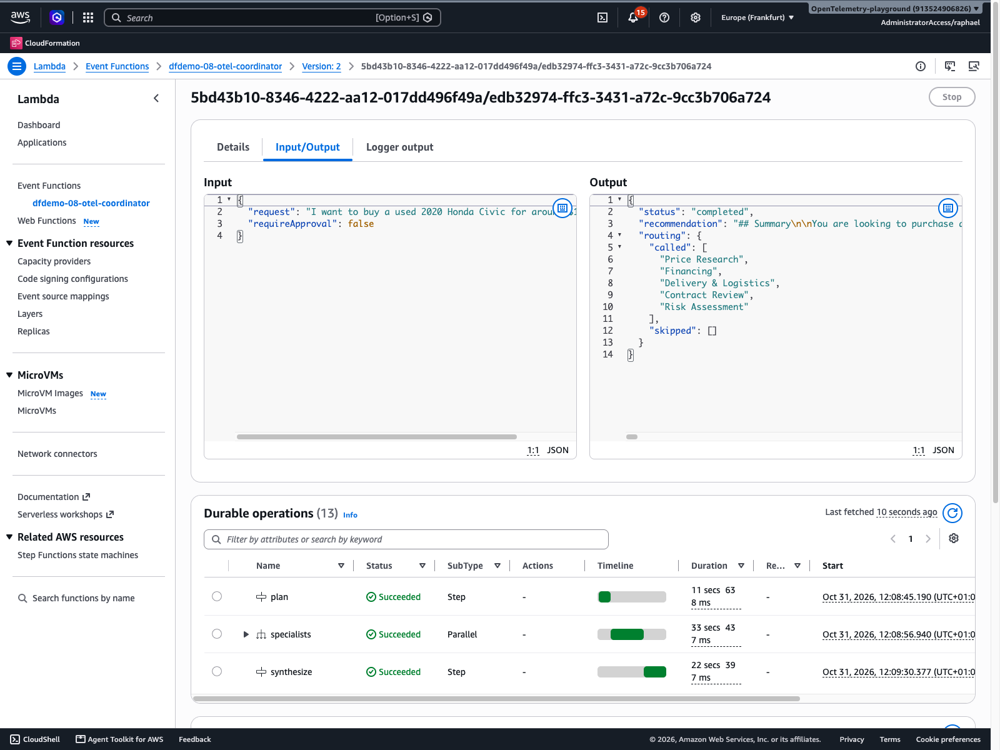


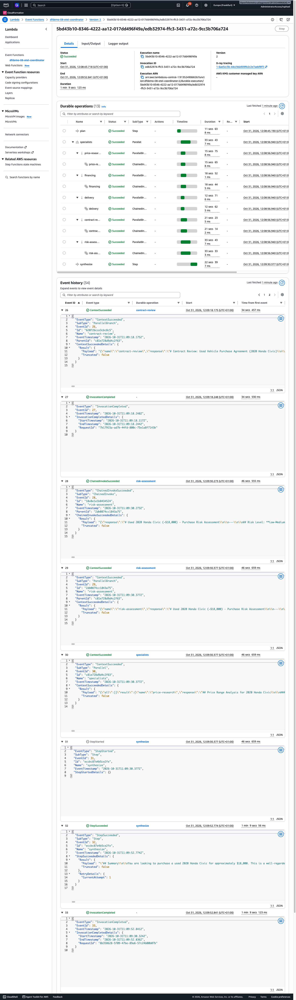
Prompt that would generate this
Add OpenTelemetry tracing to the durable coordinator.
1. src/lib/otel.ts: export loadOtelPlugins(): DurableInstrumentationPluginFactory[]. It reads process.env.OTEL_PLUGIN: unset returns []; "execution" returns [createExecutionOtelPluginFactory()]; "invocation" returns [createInvocationOtelPluginFactory()]; anything else throws Error('Unknown OTEL_PLUGIN value: "<value>"'). Import the factories from @aws/durable-execution-sdk-js-otel. Document that the OTel provider comes from the Lambda layer.
2. In the coordinator pass `{ plugins }` (from loadOtelPlugins() at module scope) as the second argument of withDurableExecution.
3. In scripts/gen-template.ts add step 08: dfdemo-08-otel-coordinator with Tracing: Active, the ADOT layer arn:aws:lambda:${AWS::Region}:901920570463:layer:aws-otel-nodejs-arm64-ver-1-30-2:6, env AWS_LAMBDA_EXEC_WRAPPER=/opt/otel-handler and OTEL_PLUGIN=execution, and the AWSXRayDaemonWriteAccess policy. Specialists dfdemo-08-otel-{price,financing,delivery,risk,contract} are plain (no tracing) and will be reused by step 10. Regenerate template.yaml.
request.json: the Honda Civic request. Record the trace ID in artifacts/trace-ids.txt.See traces in CloudWatch
Outline bullet
See traces in CloudWatch.
Goal
Open the trace of the step 08 run in CloudWatch (Application Signals / Transaction Search): trace map, segments timeline, durable operation spans and the Bedrock call as its own node. No new function: this step reuses the step 08 execution.
dfdemo-08-otel-coordinator:2).What to say
- Same execution as step 08; we only look at it differently.
- The trace has 52 spans in the console view. Durable operations (steps, invokes, retries) appear as named spans, and the Bedrock ConverseStream call is a child span with its own duration.
- Transaction Search is enabled in the account, which stores spans in the aws/spans log group so they can be queried (step 12).
Code excerpt (final code)
# Step 09: see traces in CloudWatch
No function. Open the traces produced by the step 08 run (`../08-otel/artifacts/`)
in CloudWatch (Application Signals / Transaction Search, trace map and segments).Invocation
| Function | dfdemo-08-otel-coordinator:2 |
|---|---|
| Request ID (x-amzn-RequestId) | 28821a75-558d-4865-b7d5-6b62d6bf3cac |
| Durable execution ID | edb32974-ffc3-3431-a72c-9cc3b706a724 |
| Durable execution ARN | arn:aws:lambda:eu-central-1:913524906826:function:dfdemo-08-otel-coordinator:2/durable-execution/5bd43b10-8346-4222-aa12-017dd496f49a/edb32974-ffc3-3431-a72c-9cc3b706a724 |
| Status | SUCCEEDED |
| Started / ended | 2026-10-31T12:08:43.718000+01:00 / 2026-10-31T12:09:52.841000+01:00 (69.1 s wall clock) |
{
"request": "I want to buy a used 2020 Honda Civic for around $18,000",
"requireApproval": false
}{
"StatusCode": 202,
"ExecutedVersion": null,
"DurableExecutionArn": "arn:aws:lambda:eu-central-1:913524906826:function:dfdemo-08-otel-coordinator:2/durable-execution/5bd43b10-8346-4222-aa12-017dd496f49a/edb32974-ffc3-3431-a72c-9cc3b706a724",
"Headers": {
"x-amzn-RequestId": "28821a75-558d-4865-b7d5-6b62d6bf3cac"
},
"Body": ""
}{
"status": "completed",
"recommendation": "## Summary\n\nYou are looking to purchase a used 2020 Honda Civic for approximately $18,000. This is a well-regarded vehicle with a strong reliability track record, and your budget falls squarely within fair market value for a mid-range example. The purchase carries a **low-to-medium overall risk profile** — the platform itself is sound, but the key variable is the specific vehicle's history and mechanical condition. The transaction itself carries additional contractual and financing risks that ar [... truncated in report, 6688 chars total]",
"routing": {
"called": [
"Price Research",
"Financing",
"Delivery & Logistics",
"Contract Review",
"Risk Assessment"
],
"skipped": []
}
}Screenshots

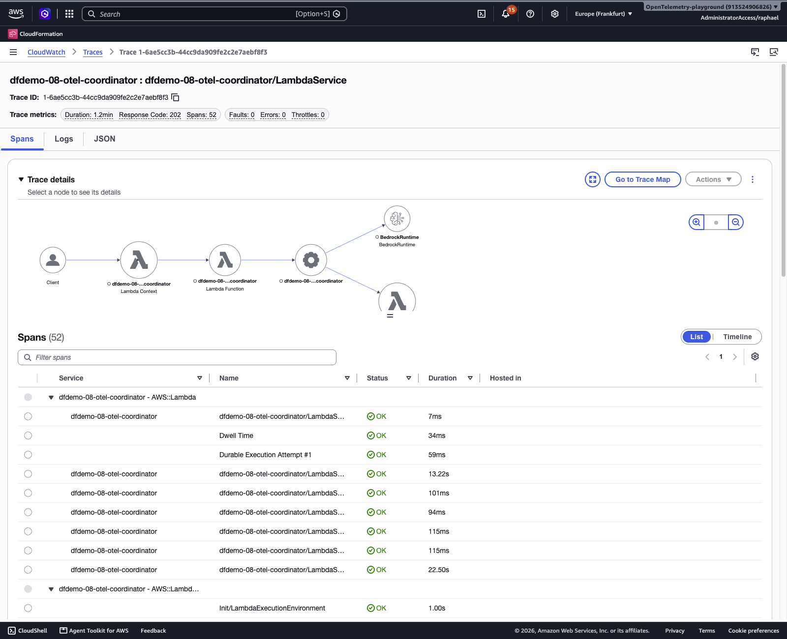

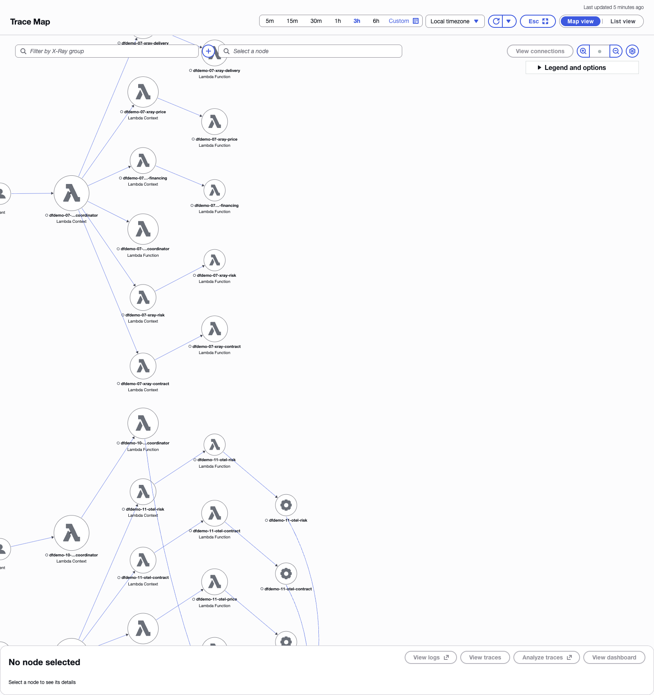
Prompt that would generate this
Write src/steps/09-traces/README.md for the "see traces in CloudWatch" step. It has no function. State that the traces come from the step 08 run (../08-otel/artifacts/) and tell the presenter how to open them: CloudWatch console, Application Signals, Transaction Search, paste the trace ID from ../08-otel/artifacts/trace-ids.txt, then show the trace map, the segments timeline, the durable operation spans and the Bedrock span. Save console screenshots under report/img.
Switch the tracing mode
Outline bullet
Switch tracing mode.
Goal
A new coordinator function uses InvocationOtelPlugin (OTEL_PLUGIN=invocation, the invocation-centered view) instead of ExecutionOtelPlugin. Only the coordinator changes; it reuses the step 08 specialists.
What to say
- One environment variable decides the mode: OTEL_PLUGIN=invocation instead of execution.
- The execution mode builds one trace around the whole workflow. The invocation mode builds traces around each handler invocation.
- Compare the two trace screenshots: same work, different shape. Pick the one that matches the question you ask most often.
- Specialists are unchanged; they are the step 08 functions.
Code excerpt (final code)
Fn10OtelMode2Coordinator:
FunctionName: dfdemo-10-otel-mode2-coordinator
Tracing: Active
Layers:
- !Sub arn:aws:lambda:${AWS::Region}:901920570463:layer:aws-otel-nodejs-arm64-ver-1-30-2:6
PRICE_RESEARCH_FUNCTION: !Ref Fn08OtelPrice
FINANCING_FUNCTION: !Ref Fn08OtelFinancing
DELIVERY_FUNCTION: !Ref Fn08OtelDelivery
RISK_ASSESSMENT_FUNCTION: !Ref Fn08OtelRisk
CONTRACT_REVIEW_FUNCTION: !Ref Fn08OtelContract
OTEL_PLUGIN: invocation
AWS_LAMBDA_EXEC_WRAPPER: /opt/otel-handlerInvocation
| Function | dfdemo-10-otel-mode2-coordinator:2 |
|---|---|
| Request ID (x-amzn-RequestId) | 938033e3-6ad2-4395-95e9-3b7c4fa5673e |
| Durable execution ID | d3009dd3-053e-32bf-ab94-407c9d9aafb9 |
| Durable execution ARN | arn:aws:lambda:eu-central-1:913524906826:function:dfdemo-10-otel-mode2-coordinator:2/durable-execution/da0c4393-ebfc-438b-83ed-c16d23aa94ef/d3009dd3-053e-32bf-ab94-407c9d9aafb9 |
| Status | SUCCEEDED |
| Started / ended | 2026-10-31T12:10:29.218000+01:00 / 2026-10-31T12:11:51.944000+01:00 (82.7 s wall clock) |
{
"request": "I want to buy a used 2020 Honda Civic for around $18,000",
"requireApproval": false
}{
"StatusCode": 202,
"ExecutedVersion": null,
"DurableExecutionArn": "arn:aws:lambda:eu-central-1:913524906826:function:dfdemo-10-otel-mode2-coordinator:2/durable-execution/da0c4393-ebfc-438b-83ed-c16d23aa94ef/d3009dd3-053e-32bf-ab94-407c9d9aafb9",
"Headers": {
"x-amzn-RequestId": "938033e3-6ad2-4395-95e9-3b7c4fa5673e"
},
"Body": ""
}{
"status": "completed",
"recommendation": "## Purchasing Recommendation: Used 2020 Honda Civic (~$18,000\n\n---\n\n### Summary\n\nYou are looking to purchase a used 2020 Honda Civic at a budget of approximately $18,000. This places you squarely in the mid-range tier of the current used Civic market, where you can realistically expect a Sport or EX trim with moderate mileage (45,000–65,000 miles) in good condition. The 2020 Civic is a strong choice — it is well-regarded for reliability, holds its value relative to segment peers, and carries mea [... truncated in report, 7970 chars total]",
"routing": {
"called": [
"Price Research",
"Financing",
"Delivery & Logistics",
"Contract Review",
"Risk Assessment"
],
"skipped": []
}
}Trace header: Root=1-6ae5cca5-44a55195411c3a0251cd3b9a;Parent=3403dcaa0b34de1f;Sampled=1.
Screenshots

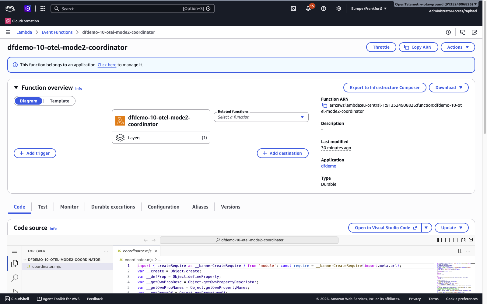

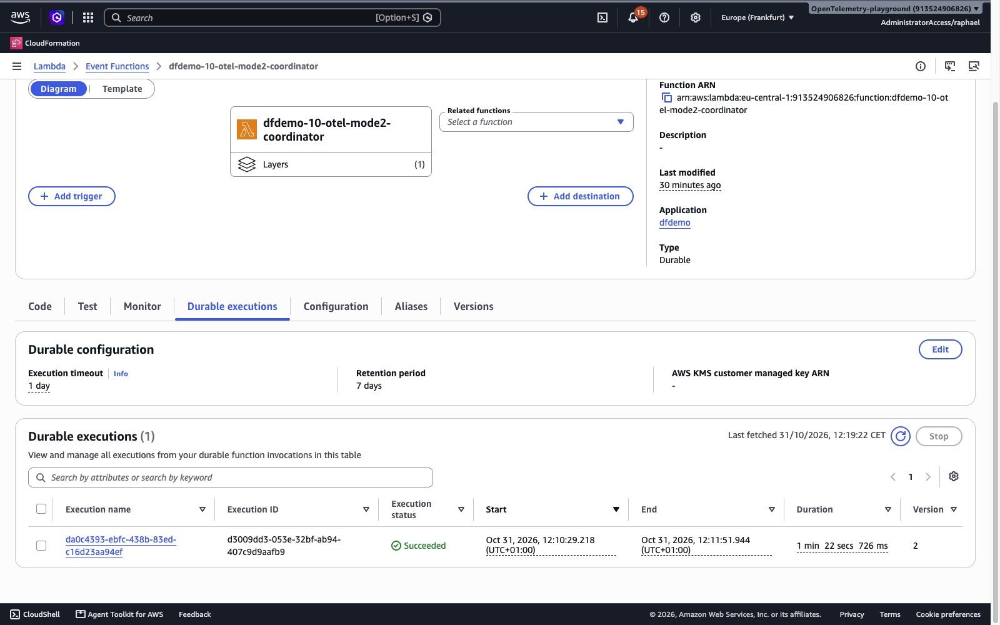

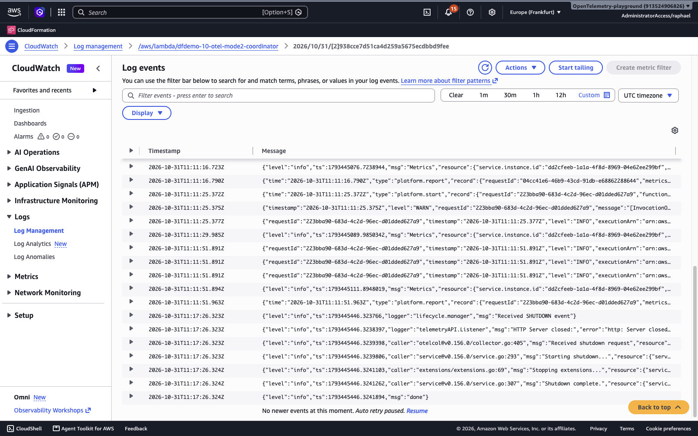

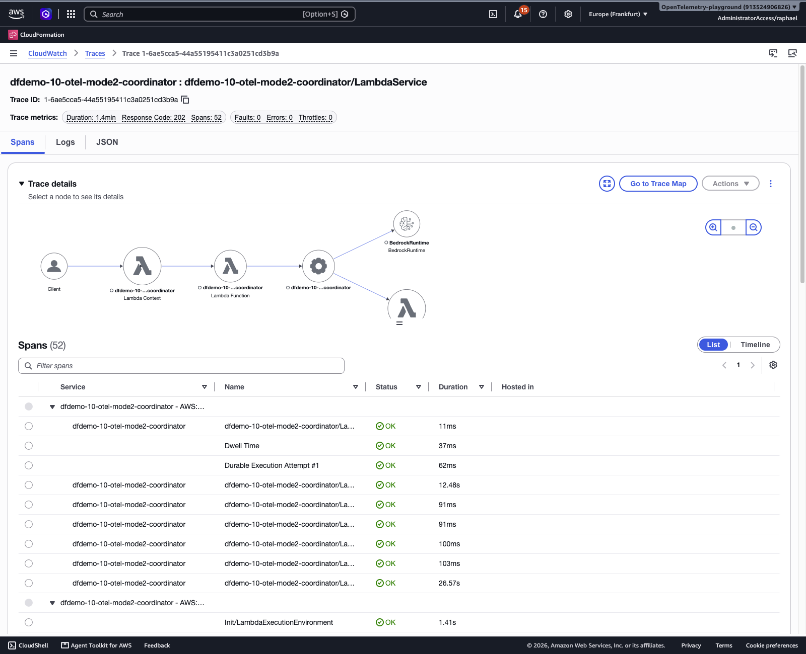
Durable execution drill-down (console)

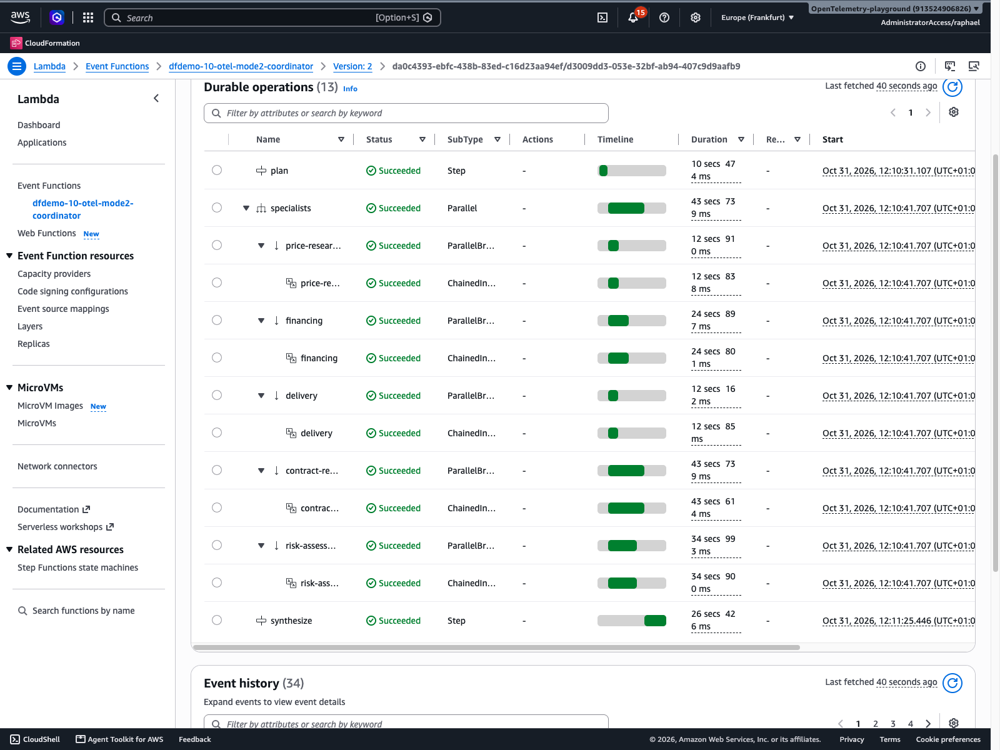

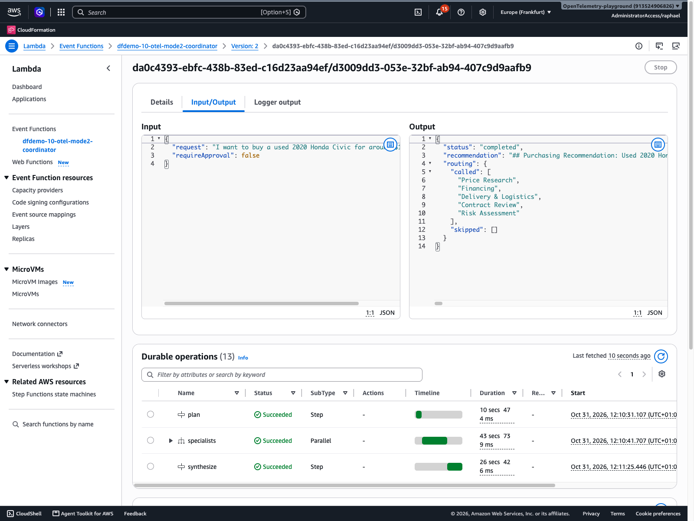


Prompt that would generate this
Add step 10 to scripts/gen-template.ts: a coordinator dfdemo-10-otel-mode2-coordinator that is identical to dfdemo-08-otel-coordinator (same handler, ADOT layer, wrapper script, Tracing: Active, AWSXRayDaemonWriteAccess) except OTEL_PLUGIN=invocation. Its env vars and lambda:InvokeFunction permission must point at the existing dfdemo-08-otel-* specialists; do not create new specialists. Regenerate template.yaml. request.json: the Honda Civic request. Record the trace ID in artifacts/trace-ids.txt.
Enable tracing for all Lambdas: context propagation
Outline bullet
Enable tracing for all Lambdas. See context propagation.
Goal
Duplicate the specialists with the OTel layer and Tracing: Active too, and a coordinator that invokes them. The specialist spans now join the coordinator's trace: one trace, six services.
What to say
- In step 10 the specialists had no tracing, so they were black boxes. Now every function carries the layer and the wrapper script.
- Context propagation: the coordinator's trace header travels with the invoke, and each specialist continues the same trace.
- The trace has 94 spans in the console view, with the six services in one trace. The slowest branch is the Risk specialist (Sonnet, 43 s Bedrock stream).
- Step 12 proves this with a query.
Code excerpt (final code)
Fn11OtelPrice:
FunctionName: dfdemo-11-otel-price
Handler: specialist.handler
Tracing: Active
Layers:
- !Sub arn:aws:lambda:${AWS::Region}:901920570463:layer:aws-otel-nodejs-arm64-ver-1-30-2:6
AWS_LAMBDA_EXEC_WRAPPER: /opt/otel-handler
- arn:aws:iam::aws:policy/AWSXRayDaemonWriteAccessInvocation
| Function | dfdemo-11-otel-all-coordinator:2 |
|---|---|
| Request ID (x-amzn-RequestId) | 3d8c12b0-b204-4b87-915a-29cc5ec50e42 |
| Durable execution ID | 7e6e9ccf-899e-32e0-b4c2-9543c535d012 |
| Durable execution ARN | arn:aws:lambda:eu-central-1:913524906826:function:dfdemo-11-otel-all-coordinator:2/durable-execution/1ac685cd-f9cd-4ed4-a2bf-ba3de46512f0/7e6e9ccf-899e-32e0-b4c2-9543c535d012 |
| Status | SUCCEEDED |
| Started / ended | 2026-10-31T12:12:28.587000+01:00 / 2026-10-31T12:13:48.528000+01:00 (79.9 s wall clock) |
{
"request": "I want to buy a used 2020 Honda Civic for around $18,000",
"requireApproval": false
}{
"StatusCode": 202,
"ExecutedVersion": null,
"DurableExecutionArn": "arn:aws:lambda:eu-central-1:913524906826:function:dfdemo-11-otel-all-coordinator:2/durable-execution/1ac685cd-f9cd-4ed4-a2bf-ba3de46512f0/7e6e9ccf-899e-32e0-b4c2-9543c535d012",
"Headers": {
"x-amzn-RequestId": "3d8c12b0-b204-4b87-915a-29cc5ec50e42"
},
"Body": ""
}{
"status": "completed",
"recommendation": "## Summary\n\nYou are purchasing a used 2020 Honda Civic at an approximately $18,000 budget. This is a fundamentally sound vehicle choice with a strong reliability reputation, and your price point is reasonable for current market conditions. However, the purchase carries meaningful risk across four dimensions: vehicle condition and history, financing cost, contractual exposure, and ongoing ownership costs. The specialists collectively paint a picture where the deal can go well with disciplined pre [... truncated in report, 6370 chars total]",
"routing": {
"called": [
"Price Research",
"Financing",
"Delivery & Logistics",
"Contract Review",
"Risk Assessment"
],
"skipped": []
}
}Trace header: Root=1-6ae5cd1c-75705e4c04ad9fe673a2a55e;Parent=7f3cbeb3e20099ba;Sampled=1.
Screenshots

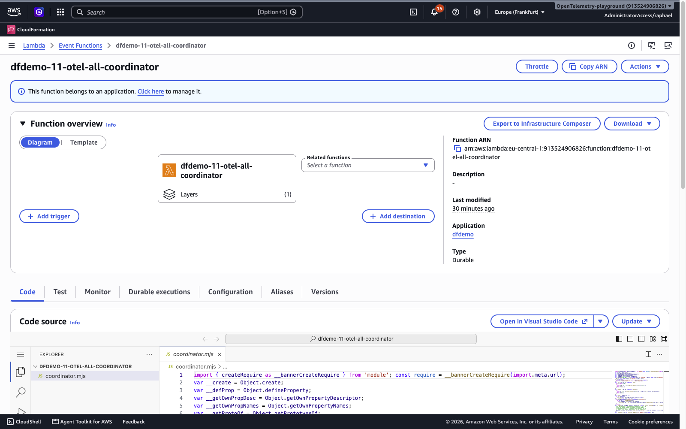

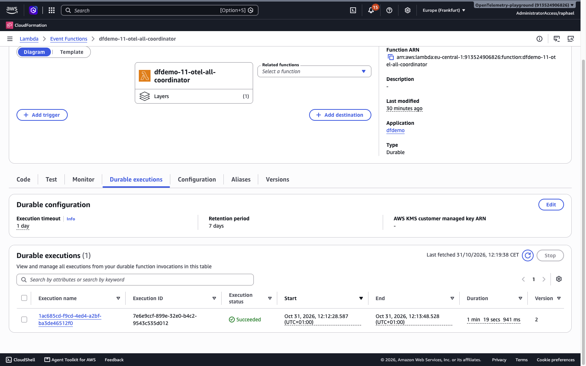


Durable execution drill-down (console)


Prompt that would generate this
Add step 11 to scripts/gen-template.ts: five specialists dfdemo-11-otel-{price,financing,delivery,risk,contract} (specialist.handler, same prompts and models as the other specialists) with Tracing: Active, the ADOT layer arn:aws:lambda:${AWS::Region}:901920570463:layer:aws-otel-nodejs-arm64-ver-1-30-2:6, AWS_LAMBDA_EXEC_WRAPPER=/opt/otel-handler and the AWSXRayDaemonWriteAccess policy. Add a coordinator dfdemo-11-otel-all-coordinator (OTEL_PLUGIN=execution, same layer and wrapper) whose env vars and invoke permission point at these five. Regenerate template.yaml. request.json: the Honda Civic request. Record the trace ID in artifacts/trace-ids.txt, then show in the console that the specialist services appear inside the coordinator's trace.Run analysis
Outline bullet
Run analysis.
Goal
Answer questions about the runs of steps 05 to 11 with CloudWatch Logs Insights (application logs and Lambda platform reports) and with trace queries over the aws/spans log group (Transaction Search). No function; no new invocation.
What to say
- Logs Insights reads the structured Lambda logs: billed duration per function, workflow milestones and invocations per execution.
- Transaction Search stores spans in aws/spans, so the same query language works on traces: spans per trace, services per trace, slowest spans.
- Q5 is the proof of context propagation: step 11 has all six services in one trace, step 10 only the coordinator.
- Q6 shows where the time goes: the Risk specialist's Bedrock call.
Queries were run with the otel-playground profile in eu-central-1 against the log groups of the coordinators of steps 05, 07, 08, 10 and 11, and against aws/spans (Transaction Search). Runner: src/steps/12-analysis/artifacts/run.sh. Time window 2026-10-31 10:00 to 12:30 UTC.
Q1. Billed duration per coordinator (Logs Insights)
# Log groups: coordinators of steps 05, 07, 08, 10, 11
# Billed vs. execution time per handler invocation, from Lambda platform.report records
filter type = "platform.report"
| stats count() as invocations, sum(record.metrics.billedDurationMs) as billedMs, avg(record.metrics.durationMs) as avgDurationMs, max(record.metrics.maxMemoryUsedMB) as maxMemMB by @log
| sort billedMs desc| Step | Log group | Handler invocations | Billed ms (sum) | Avg duration ms | Max memory MB |
|---|---|---|---|---|---|
| 05/06 | /aws/lambda/dfdemo-05-coordinator | 9 | 55055 | 6017 | 166 |
| 10 | /aws/lambda/dfdemo-10-otel-mode2-coordinator | 6 | 39377 | 6327 | 264 |
| 07 | /aws/lambda/dfdemo-07-xray-coordinator | 6 | 39278 | 6442 | 158 |
| 08 | /aws/lambda/dfdemo-08-otel-coordinator | 6 | 36038 | 5839 | 260 |
| 11 | /aws/lambda/dfdemo-11-otel-all-coordinator | 6 | 34905 | 5586 | 262 |
Result file: src/steps/12-analysis/artifacts/results/q1-billed-duration-by-function.json
Each coordinator is invoked repeatedly because the execution suspends while specialists run, then replays. Steps 05 and 06 share a log group, so its row covers two executions.
Q2. Workflow milestones logged by context.logger
# Log groups: coordinators of steps 05, 07, 08, 10, 11
# Workflow milestones logged by context.logger, one row per event
filter message like /plan_created|specialists_completed|recommendation_generated|request_completed/
| fields @timestamp, @log, requestId, executionArn, message
| sort @timestamp asc| Timestamp (UTC) | Function | Execution ID (first 8) | Message |
|---|---|---|---|
| 2026-10-31 11:02:47.242 | dfdemo-05-coordinator | 3372c20d | plan_created { specialistsCalled: [ 'Price Research', 'Delivery & Logistics' ], specialistsSkipped: [ 'Financing', 'Risk Assessment', 'Contract Review' ] } |
| 2026-10-31 11:03:01.930 | dfdemo-05-coordinator | 3372c20d | specialists_completed { count: 2 } |
| 2026-10-31 11:03:15.565 | dfdemo-05-coordinator | 3372c20d | request_completed |
| 2026-10-31 11:03:15.565 | dfdemo-05-coordinator | 3372c20d | recommendation_generated { responseLength: 4552 } |
| 2026-10-31 11:04:22.282 | dfdemo-05-coordinator | 2f16e5b3 | plan_created { specialistsCalled: [ 'Price Research', 'Financing', 'Delivery & Logistics', 'Contract Review', 'Risk Assessment' ], specialistsSkipped: [] } |
| 2026-10-31 11:04:58.328 | dfdemo-05-coordinator | 2f16e5b3 | specialists_completed { count: 5 } |
| 2026-10-31 11:05:20.358 | dfdemo-05-coordinator | 2f16e5b3 | recommendation_generated { responseLength: 6876 } |
| 2026-10-31 11:05:20.358 | dfdemo-05-coordinator | 2f16e5b3 | request_completed |
| 2026-10-31 11:06:57.022 | dfdemo-07-xray-coordinator | e4ffa2e0 | plan_created { specialistsCalled: [ 'Price Research', 'Financing', 'Delivery & Logistics', 'Contract Review', 'Risk Assessment' ], specialistsSkipped: [] } |
| 2026-10-31 11:07:34.732 | dfdemo-07-xray-coordinator | e4ffa2e0 | specialists_completed { count: 5 } |
| 2026-10-31 11:08:01.704 | dfdemo-07-xray-coordinator | e4ffa2e0 | recommendation_generated { responseLength: 8100 } |
| 2026-10-31 11:08:01.705 | dfdemo-07-xray-coordinator | e4ffa2e0 | request_completed |
| 2026-10-31 11:08:56.846 | dfdemo-08-otel-coordinator | edb32974 | plan_created { specialistsCalled: [ 'Price Research', 'Financing', 'Delivery & Logistics', 'Contract Review', 'Risk Assessment' ], specialistsSkipped: [] } |
| 2026-10-31 11:09:30.344 | dfdemo-08-otel-coordinator | edb32974 | specialists_completed { count: 5 } |
| 2026-10-31 11:09:52.791 | dfdemo-08-otel-coordinator | edb32974 | request_completed |
| 2026-10-31 11:09:52.791 | dfdemo-08-otel-coordinator | edb32974 | recommendation_generated { responseLength: 6688 } |
| 2026-10-31 11:10:41.599 | dfdemo-10-otel-mode2-coordinator | d3009dd3 | plan_created { specialistsCalled: [ 'Price Research', 'Financing', 'Delivery & Logistics', 'Contract Review', 'Risk Assessment' ], specialistsSkipped: [] } |
| 2026-10-31 11:11:25.377 | dfdemo-10-otel-mode2-coordinator | d3009dd3 | specialists_completed { count: 5 } |
| 2026-10-31 11:11:51.891 | dfdemo-10-otel-mode2-coordinator | d3009dd3 | request_completed |
| 2026-10-31 11:11:51.891 | dfdemo-10-otel-mode2-coordinator | d3009dd3 | recommendation_generated { responseLength: 7970 } |
| 2026-10-31 11:12:41.809 | dfdemo-11-otel-all-coordinator | 7e6e9ccf | plan_created { specialistsCalled: [ 'Price Research', 'Financing', 'Delivery & Logistics', 'Contract Review', 'Risk Assessment' ], specialistsSkipped: [] } |
| 2026-10-31 11:13:27.249 | dfdemo-11-otel-all-coordinator | 7e6e9ccf | specialists_completed { count: 5 } |
| 2026-10-31 11:13:48.480 | dfdemo-11-otel-all-coordinator | 7e6e9ccf | request_completed |
| 2026-10-31 11:13:48.480 | dfdemo-11-otel-all-coordinator | 7e6e9ccf | recommendation_generated { responseLength: 6370 } |
Result file: src/steps/12-analysis/artifacts/results/q2-workflow-milestones.json
Q3. Handler invocations per durable execution
# Log groups: coordinators of steps 05, 07, 08, 10, 11
# Distinct handler invocations that logged for each durable execution (replay-aware logger: replayed code stays silent)
filter ispresent(executionArn)
| stats count() as logLines, count_distinct(requestId) as invocationsThatLogged, min(@timestamp) as firstSeen, max(@timestamp) as lastSeen by executionArn
| sort firstSeen asc| Function | Durable execution ID | Log lines | Invocations that logged | First seen | Last seen |
|---|---|---|---|---|---|
| dfdemo-05-coordinator | 3372c20d-790d-3125-83f0-d6419592a234 | 5 | 2 | 2026-10-31 11:02:47.242 | 2026-10-31 11:03:15.565 |
| dfdemo-05-coordinator | 2f16e5b3-e54b-3d5d-b2af-ba29321fd768 | 6 | 2 | 2026-10-31 11:04:11.351 | 2026-10-31 11:05:20.358 |
| dfdemo-07-xray-coordinator | e4ffa2e0-958e-3d26-b2a0-68290637b62b | 5 | 2 | 2026-10-31 11:06:57.022 | 2026-10-31 11:08:01.705 |
| dfdemo-08-otel-coordinator | edb32974-ffc3-3431-a72c-9cc3b706a724 | 6 | 2 | 2026-10-31 11:08:45.038 | 2026-10-31 11:09:52.791 |
| dfdemo-10-otel-mode2-coordinator | d3009dd3-053e-32bf-ab94-407c9d9aafb9 | 5 | 2 | 2026-10-31 11:10:41.599 | 2026-10-31 11:11:51.891 |
| dfdemo-11-otel-all-coordinator | 7e6e9ccf-899e-32e0-b4c2-9543c535d012 | 5 | 2 | 2026-10-31 11:12:41.809 | 2026-10-31 11:13:48.480 |
Result file: src/steps/12-analysis/artifacts/results/q3-invocations-per-execution.json
The logger is replay-aware, so replayed code stays silent. Every run logs from two invocations: the one that planned and started the specialists, and the one that resumed after them.
Q4. Spans per trace (Transaction Search, aws/spans)
# Log group: aws/spans (CloudWatch Transaction Search)
# Span count and time span per trace for the runs of steps 07, 08, 10, 11
filter traceId in ["6ae5cbc4712cf6fd1703fd806783e1ad", "6ae5cc3b44cc9da909fe2c2e7aebf8f3", "6ae5cca544a55195411c3a0251cd3b9a", "6ae5cd1c75705e4c04ad9fe673a2a55e"]
| stats count() as spans, count_distinct(spanId) as distinctSpans, min(startTimeUnixNano) as firstStartNs, max(endTimeUnixNano) as lastEndNs by traceId| Step | Trace ID | Records | Distinct spans | Trace length (s) |
|---|---|---|---|---|
| 07 | 6ae5cbc4712cf6fd1703fd806783e1ad | 76 | 47 | 77.0 |
| 08/09 | 6ae5cc3b44cc9da909fe2c2e7aebf8f3 | 54 | 40 | 69.2 |
| 10 | 6ae5cca544a55195411c3a0251cd3b9a | 54 | 40 | 82.8 |
| 11 | 6ae5cd1c75705e4c04ad9fe673a2a55e | 105 | 76 | 80.0 |
Result file: src/steps/12-analysis/artifacts/results/q4-spans-per-trace.json
Records exceed distinct spans because Transaction Search stores some spans more than once (for example an OTel span and its X-Ray segment copy). The console reports the distinct counts used in the screenshots (47, 52, 94 for steps 07, 08, 11 in the console view).
Q5. Services per trace: context propagation
# Log group: aws/spans
# Which services and span names appear in each trace (context propagation: step 11 should show specialist services in the same trace)
filter traceId in ["6ae5cbc4712cf6fd1703fd806783e1ad", "6ae5cc3b44cc9da909fe2c2e7aebf8f3", "6ae5cca544a55195411c3a0251cd3b9a", "6ae5cd1c75705e4c04ad9fe673a2a55e"]
| stats count() as spans by traceId, attributes.aws.local.service
| sort traceId asc, spans desc| Step | Trace ID | Services (span records) |
|---|---|---|
| 07 | 6ae5cbc4712cf6fd1703fd806783e1ad | dfdemo-07-xray-coordinator (7), UnknownService (2), dfdemo-07-xray-contract (2), dfdemo-07-xray-financing (2), dfdemo-07-xray-risk (2), dfdemo-07-xray-delivery (2), dfdemo-07-xray-price (2) |
| 08/09 | 6ae5cc3b44cc9da909fe2c2e7aebf8f3 | UnknownService (14), dfdemo-08-otel-coordinator (13) |
| 10 | 6ae5cca544a55195411c3a0251cd3b9a | UnknownService (14), dfdemo-10-otel-mode2-coordinator (13) |
| 11 | 6ae5cd1c75705e4c04ad9fe673a2a55e | UnknownService (20), dfdemo-11-otel-all-coordinator (13), dfdemo-11-otel-delivery (3), dfdemo-11-otel-price (3), dfdemo-11-otel-contract (3), dfdemo-11-otel-risk (3), dfdemo-11-otel-financing (3) |
Result file: src/steps/12-analysis/artifacts/results/q5-spans-by-service-and-name.json
Step 10 shows only the coordinator service: its specialists (the step 08 functions) are untraced, so they cannot join the trace. Steps 07 and 11 show the coordinator and all five specialists in one trace.
Q6. Ten slowest spans of the step 11 trace
# Log group: aws/spans
# Ten slowest spans of the step 11 trace (all functions traced)
filter traceId = "6ae5cd1c75705e4c04ad9fe673a2a55e"
| fields name, kind, attributes.aws.local.service, (endTimeUnixNano - startTimeUnixNano) / 1000000 as durationMs
| sort durationMs desc
| limit 10| Span name | Kind | Service | Duration ms |
|---|---|---|---|
| dfdemo-11-otel-risk/LambdaService | SERVER | dfdemo-11-otel-risk | 45227 |
| dfdemo-11-otel-risk/LambdaExecutionEnvironment | SERVER | 43739 | |
| dfdemo-11-otel-risk | SERVER | dfdemo-11-otel-risk | 43507 |
| BedrockRuntime.ConverseStream | CLIENT | UnknownService | 43496 |
| dfdemo-11-otel-financing/LambdaService | SERVER | dfdemo-11-otel-financing | 22229 |
| dfdemo-11-otel-all-coordinator/LambdaExecutionEnvironment | SERVER | 21301 | |
| dfdemo-11-otel-all-coordinator/LambdaService | SERVER | dfdemo-11-otel-all-coordinator | 21280 |
| dfdemo-11-otel-all-coordinator | SERVER | dfdemo-11-otel-all-coordinator | 21235 |
| BedrockRuntime.ConverseStream | CLIENT | UnknownService | 21191 |
| dfdemo-11-otel-financing/LambdaExecutionEnvironment | SERVER | 20783 |
Result file: src/steps/12-analysis/artifacts/results/q6-slowest-spans-step11.json
The Risk specialist (Sonnet 4.6) dominates: its Bedrock ConverseStream call lasts about 43.5 s, which sets the length of the parallel block.
Prompt that would generate this
Using the otel-playground AWS profile in eu-central-1, write and run CloudWatch Logs Insights queries over the runs of steps 05 to 11 of this repo and save query text and JSON results under src/steps/12-analysis/artifacts/{queries,results}.
Log groups for Q1 to Q3: /aws/lambda/dfdemo-05-coordinator, dfdemo-07-xray-coordinator, dfdemo-08-otel-coordinator, dfdemo-10-otel-mode2-coordinator, dfdemo-11-otel-all-coordinator. Log group for Q4 to Q6: aws/spans.
Q1: filter type = "platform.report" | stats count(), sum(record.metrics.billedDurationMs), avg(record.metrics.durationMs), max(record.metrics.maxMemoryUsedMB) by @log.
Q2: filter message like /plan_created|specialists_completed|recommendation_generated|request_completed/ | fields @timestamp, @log, requestId, executionArn, message | sort @timestamp asc.
Q3: filter ispresent(executionArn) | stats count(), count_distinct(requestId), min(@timestamp), max(@timestamp) by executionArn.
Q4: spans per trace for the trace IDs in src/steps/{07-xray,08-otel,10-mode,11-all}/artifacts/trace-ids.txt (dashes removed from the X-Ray ID): count(), count_distinct(spanId), min(startTimeUnixNano), max(endTimeUnixNano) by traceId.
Q5: count by traceId, attributes.aws.local.service for the same traces. Q6: ten slowest spans of the step 11 trace by (endTimeUnixNano - startTimeUnixNano)/1000000.
Write run.sh that starts a query, polls get-query-results until Complete and saves the JSON. Spans can take minutes to appear: retry until rows are returned.Footnotes
An earlier failed attempt of step 01
The first attempt to run step 01 failed at start-up with createRequire has already been declared. The esbuild banner declared createRequire and the bundled durable SDK declared it as well. Commit 4ea687f (fix(build): alias banner createRequire to avoid duplicate declaration with durable SDK bundle) aliases the banner import as __bannerCreateRequire; you can see it in every Banner entry in template.yaml. The logs of that attempt are kept in src/steps/01-retry/artifacts-failed-attempt/ and are not evidence for step 01: all evidence above comes from the later successful run.
A later fix, commit f2dce20, changed the REPORT capture in scripts/lib/invoke-step.sh: functions use JSON log format, so there is no plain-text REPORT RequestId line, and report.txt renders the platform.report records in REPORT form.
Other notes
- Models: coordinator
global.anthropic.claude-sonnet-4-6, specialistsglobal.anthropic.claude-haiku-4-5-20251001-v1:0(risk assessment uses Sonnet). Newer models were not available in the account. - Step 03 deviates from the outline text: instead of a callback wait it uses a failing second model call. The handler runs twice (one failed attempt), not three times.
- Step 08 ("X-Ray off" in the outline) keeps
Tracing: Activeon the coordinator in the template, together with the ADOT layer and the AWSXRayDaemonWriteAccess policy; the OTel plugin adds the durable operation spans. - Screenshots were taken from the AWS console after federated sign-in; no credentials or sign-in URLs are stored. Image index:
report/img/INDEX.md. - The stack
dfdemowas not deleted.